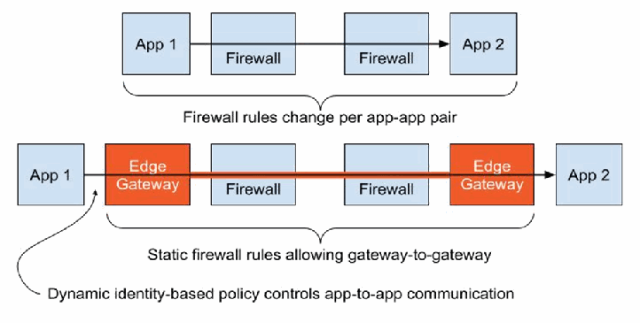
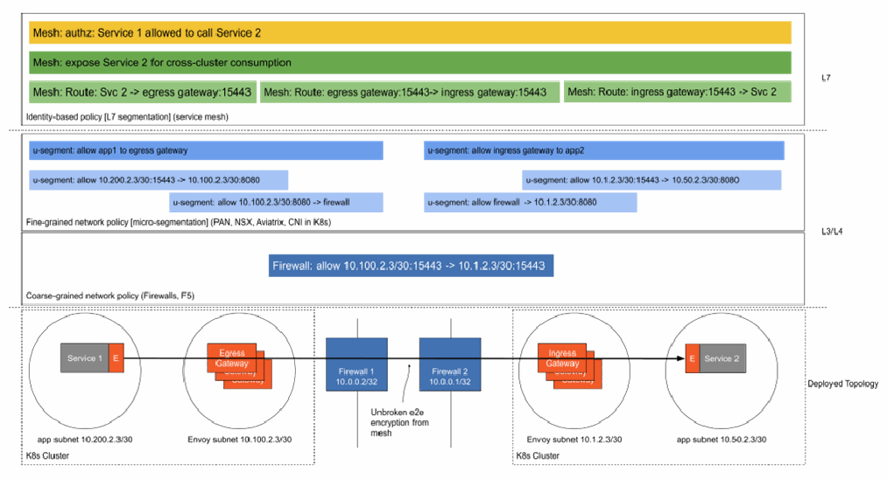
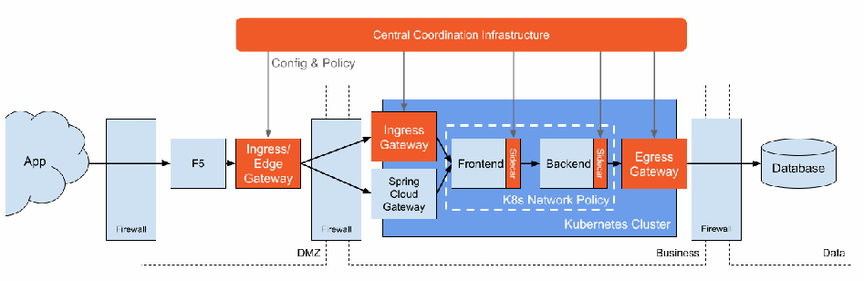

NIST Special Publication · PDF 原文抽出
A Zero Trust Architecture Model for Access Control in Cloud-Native Applications in Multi-Cloud Environments
マルチクラウド環境のクラウドネイティブアプリケーションにおけるアクセス制御のためのゼロトラストアーキテクチャモデル
NIST SP 800-207A（A Zero Trust Architecture Model for Access Control in Cloud-Native Applications in Multi-Cloud Environments）の英文と日本語訳を段落ごとに並べた閲覧用ページです。マルチクラウドおよびハイブリッド環境で、アプリケーションやサービスのIDに基づくきめ細かなアクセス制御を実現するアーキテクチャを示します。 翻訳は非公式です。要件の確認にはNIST の正式版 PDFを参照してください。
PDF から抽出した原文は原本との照合待ちです。
PDF p.1: NISTロゴと「Check for updates」アイコン内の文字は画像に含まれ、本文テキストブロックとしては抽出されていない（装飾画像として未転記）。
NIST Special Publication
NIST特別刊行物
未レビュー訳NIST SP 800-207A
NIST SP 800-207A
未レビュー訳A Zero Trust Architecture Model for Access Control in Cloud-Native Applications in Multi-Location Environments
環境におけるクラウドネイティブアプリケーションのアクセス制御のためのゼロトラストアーキテクチャモデル
未レビュー訳Ramaswamy Chandramouli
Ramaswamy Chandramouli
未レビュー訳Zack Butcher
Zack Butcher
未レビュー訳This publication is available free of charge from: https://doi.org/10.6028/NIST.SP.800-207A
本刊行物は、次のURLから無料で入手できる：https://doi.org/10.6028/NIST.SP.800-207A
未レビュー訳NIST Special Publication
NIST特別刊行物
未レビュー訳NIST SP 800-207A
NIST SP 800-207A
未レビュー訳A Zero Trust Architecture Model for Access Control in Cloud-Native Applications in Multi-Location Environments
環境におけるクラウドネイティブアプリケーションのアクセス制御のためのゼロトラストアーキテクチャモデル
未レビュー訳Ramaswamy Chandramouli Computer Security Division Information Technology Laboratory
Ramaswamy Chandramouli 情報技術研究所コンピュータセキュリティ部門
未レビュー訳Zack Butcher Tetrate, Inc.
Zack Butcher Tetrate, Inc.
未レビュー訳This publication is available free of charge from: https://doi.org/10.6028/NIST.SP.800-207A
本刊行物は、次のURLから無料で入手できる：https://doi.org/10.6028/NIST.SP.800-207A
未レビュー訳September 2023
2023年9月
未レビュー訳
米国商務省（U.S. Department of Commerce）の円形紋章。外周に「商務省」「アメリカ合衆国」の文字があり、中央に盾と鷲が描かれている。
U.S. Department of Commerce Gina M. Raimondo, Secretary
米国商務省 長官 Gina M. Raimondo
未レビュー訳National Institute of Standards and Technology
国立標準技術研究所（NIST）
未レビュー訳Laurie E. Locascio, NIST Director and Under Secretary of Commerce for Standards and Technology
Laurie E. Locascio、NIST所長兼商務省標準技術担当次官
未レビュー訳Certain commercial equipment, instruments, software, or materials, commercial or non-commercial, are identified in this paper in order to specify the experimental procedure adequately. Such identification does not imply recommendation or endorsement of any product or service by NIST, nor does it imply that the materials or equipment identified are necessarily the best available for the purpose.
本書では、実験手順を十分に特定するため、特定の商用または非商用の機器、装置、ソフトウェア、または材料を示すことがある。これらの特定は、NISTによる製品またはサービスの推奨・承認を意味するものではなく、また、特定された材料または機器が必ずしも目的に最適であることを意味するものでもない。
未レビュー訳There may be references in this publication to other publications currently under development by NIST in accordance with its assigned statutory responsibilities. The information in this publication, including concepts and methodologies, may be used by federal agencies even before the completion of such companion publications. Thus, until each publication is completed, current requirements, guidelines, and procedures, where they exist, remain operative. For planning and transition purposes, federal agencies may wish to closely follow the development of these new publications by NIST.
本刊行物には、NISTが割り当てられた法的責任に基づいて現在策定中の他の刊行物への参照が含まれる場合がある。本刊行物に記載された情報（概念や方法論を含む）は、関連する補完刊行物が完成する前であっても、連邦機関が利用できる。したがって、各刊行物が完成するまでは、現行の要件、ガイドライン、手順が存在する場合、それらが引き続き有効である。計画および移行のため、連邦機関はNISTによる新刊行物の策定状況を注視してもよい。
未レビュー訳Organizations are encouraged to review all draft publications during public comment periods and provide feedback to NIST. Many NIST cybersecurity publications, other than the ones noted above, are available at https://csrc.nist.gov/publications.
組織には、公開コメント期間中にすべての草案を確認し、NISTに意見を提出することが推奨される。上記で触れたものを除く多くのNISTサイバーセキュリティ刊行物は、https://csrc.nist.gov/publications から入手できる。
未レビュー訳Authority
This publication has been developed by NIST in accordance with its statutory responsibilities under the Federal Information Security Modernization Act (FISMA) of 2014, 44 U.S.C. § 3551 et seq., Public Law (P.L.) 113-283. NIST is responsible for developing information security standards and guidelines, including minimum requirements for federal information systems, but such standards and guidelines shall not apply to national security systems without the express approval of appropriate federal officials exercising policy authority over such systems. This guideline is consistent with the requirements of the Office of Management and Budget (OMB) Circular A-130.
権限
本刊行物は、2014年連邦情報セキュリティ近代化法（FISMA）、合衆国法典第44編第3551条以降、公法113-283に基づく法定責任に従ってNISTが策定した。NISTは、連邦情報システムの最低要件を含む情報セキュリティ標準およびガイドラインの策定を担う。ただし、国の安全保障システムに関する政策権限を行使する適切な連邦政府職員から明示的な承認を得ない限り、これらの標準およびガイドラインを国の安全保障システムに適用してはならない。本ガイドラインは、行政管理予算局（OMB）通達A-130に整合している。
Nothing in this publication should be taken to contradict the standards and guidelines made mandatory and binding on federal agencies by the Secretary of Commerce under statutory authority. Nor should these guidelines be interpreted as altering or superseding the existing authorities of the Secretary of Commerce, Director of the OMB, or any other federal official. This publication may be used by nongovernmental organizations on a voluntary basis and is not subject to copyright in the United States. Attribution would, however, be appreciated by NIST.
本刊行物のいかなる内容も、法定権限に基づき商務長官が連邦機関に義務付け、拘束力を持たせた標準およびガイドラインに反するものと解釈してはならない。また、本ガイドラインは、商務長官、OMB長官、またはその他の連邦政府職員が有する既存の権限を変更もしくは置換するものと解釈してはならない。本刊行物は、非政府組織が任意に利用でき、米国内では著作権の対象とならない。ただし、NISTは出典表示を歓迎する。
未レビュー訳NIST Technical Series Policies
Copyright, Use, and Licensing Statements
NIST Technical Series Publication Identifier Syntax
NIST技術シリーズの方針
著作権、利用、ライセンスに関する声明
NIST技術シリーズ刊行物の識別子の構文
Publication History
Approved by the NIST Editorial Review Board on 2023-09-08
刊行履歴
2023年9月8日、NIST編集審査委員会の承認を得た。
How to Cite this NIST Technical Series Publication:
Chandramouli R, Butcher Z (2023) A Zero-Trust Architecture Model for Access Control in Cloud-Native Applications in Multi-Location Environments. (National Institute of Standards and Technology, Gaithersburg, MD), NIST Special Publication (SP) NIST SP 800-207A. https://doi.org/10.6028/NIST.SP.800-207A
本NIST技術シリーズ刊行物の引用方法：
Chandramouli R、Butcher Z（2023）「マルチロケーション環境のクラウドネイティブアプリケーションにおけるアクセス制御のためのゼロトラストアーキテクチャモデル」（米国国立標準技術研究所、メリーランド州ゲイザースバーグ）、NIST特別刊行物（SP）NIST SP 800-207A。https://doi.org/10.6028/NIST.SP.800-207A
Author ORCID iDs
Ramaswamy Chandramouli: 0000-0002-7387-5858
著者のORCID iD
Ramaswamy Chandramouli：0000-0002-7387-5858
Contact Information
sp800-207A-comments@nist.gov
連絡先
sp800-207A-comments@nist.gov
National Institute of Standards and Technology Attn: Computer Security Division, Information Technology Laboratory 100 Bureau Drive (Mail Stop 8930) Gaithersburg, MD 20899-8930
米国国立標準技術研究所 宛先：情報技術研究所コンピュータセキュリティ部門 100 Bureau Drive（郵便留置番号8930） Gaithersburg, MD 20899-8930
未レビュー訳All comments are subject to release under the Freedom of Information Act (FOIA).
すべてのコメントは、情報公開法（FOIA）に基づく公開の対象となる。
未レビュー訳Abstract
要旨
未レビュー訳One of the basic tenets of zero trust is to remove the implicit trust in users, services, and devices based only on their network location, affiliation, and ownership. NIST Special Publication 800-207 has laid out a comprehensive set of zero trust principles and referenced zero trust architectures (ZTA) for turning those concepts into reality. A key paradigm shift in ZTAs is the change in focus from security controls based on segmentation and isolation using network parameters (e.g., Internet Protocol (IP) addresses, subnets, perimeter) to identities. From an application security point of view, this requires authentication and authorization policies based on application and service identities in addition to the underlying network parameters and user identities. This in turn requires a platform that consists of Application Programming Interface (API) gateways, sidecar proxies, and application identity infrastructures (e.g., Secure Production Identity Framework for Everyone [SPIFFE]) that can enforce those policies irrespective of the location of the services or applications, whether on-premises or on multiple clouds. The objective of this publication is to provide guidance for realizing an architecture that can enforce granular application-level policies while meeting the runtime requirements of ZTA for multi-cloud and hybrid environments.
ゼロトラストの基本原則の一つは、ネットワーク上の位置、所属、所有者だけを根拠として、ユーザー、サービス、デバイスに暗黙の信頼を与えないことである。NIST特別刊行物800-207は、ゼロトラストの概念を実現するための包括的な原則群を示し、参照となるゼロトラストアーキテクチャ（ZTA）を提示した。ZTAにおける重要なパラダイムシフトは、ネットワークパラメーター（例：インターネットプロトコル（IP）アドレス、サブネット、境界）を用いたセグメンテーションと分離に基づくセキュリティ制御から、アイデンティティに基づく制御への重点の移行である。アプリケーションセキュリティの観点では、基盤となるネットワークパラメーターやユーザーIDに加え、アプリケーションとサービスのアイデンティティに基づく認証・認可ポリシーが必要になる。そのため、APIゲートウェイ、サイドカープロキシ、アプリケーションアイデンティティ基盤（例：Secure Production Identity Framework for Everyone［SPIFFE］）で構成されるプラットフォームが必要となる。このプラットフォームは、サービスやアプリケーションがオンプレミスにあるか、複数のクラウドにあるかにかかわらず、ポリシーを適用できなければならない。本刊行物は、マルチクラウドおよびハイブリッド環境でZTAの実行時要件を満たしつつ、きめ細かなアプリケーションレベルのポリシーを適用できるアーキテクチャの実現に向けた指針を示す。
未レビュー訳Keywords
キーワード
未レビュー訳egress gateway; identity-tier policies; ingress gateway; microservices; multi-cloud; network-tier policies; service mesh; sidecar proxy; SPIFFE; transit gateway; zero trust; zero trust architecture.
エグレスゲートウェイ；アイデンティティ層ポリシー；イングレスゲートウェイ；マイクロサービス；マルチクラウド；ネットワーク層ポリシー；サービスメッシュ；サイドカープロキシ；SPIFFE；トランジットゲートウェイ；ゼロトラスト；ゼロトラストアーキテクチャ。
未レビュー訳Reports on Computer Systems Technology
コンピューターシステム技術に関する報告書
未レビュー訳The Information Technology Laboratory (ITL) at the National Institute of Standards and Technology (NIST) promotes the U.S. economy and public welfare by providing technical leadership for the Nation’s measurement and standards infrastructure. ITL develops tests, test methods, reference data, proof of concept implementations, and technical analyses to advance the development and productive use of information technology. ITL’s responsibilities include the development of management, administrative, technical, and physical standards and guidelines for the cost-effective security and privacy of other than national security-related information in federal information systems. The Special Publication 800-series reports on ITL’s research, guidelines, and outreach efforts in information system security, and its collaborative activities with industry, government, and academic organizations.
米国国立標準技術研究所（NIST）の情報技術研究所（ITL）は、米国の計測・標準インフラに対する技術的リーダーシップを提供し、米国経済と公共の福祉の向上に貢献している。ITLは、情報技術の発展と生産的な活用を促進するため、試験、試験方法、参照データ、概念実証実装、技術分析を行う。ITLは、連邦情報システムにおける国家安全保障関連以外の情報を費用対効果の高い方法で保護し、プライバシーを確保するための管理、運用、技術、物理的な標準およびガイドラインの策定も担う。特別刊行物800シリーズは、情報システムセキュリティに関するITLの研究、ガイドライン、普及活動、および産業界、政府、学術機関との協力活動を報告するものである。
未レビュー訳Patent Disclosure Notice
特許開示に関する通知
未レビュー訳NOTICE: ITL has requested that holders of patent claims whose use may be required for compliance with the guidance or requirements of this publication disclose such patent claims to ITL. However, holders of patents are not obligated to respond to ITL calls for patents and ITL has not undertaken a patent search in order to identify which, if any, patents may apply to this publication. As of the date of publication and following call(s) for the identification of patent claims whose use may be required for compliance with the guidance or requirements of this publication, no such patent claims have been identified to ITL. No representation is made or implied by ITL that licenses are not required to avoid patent infringement in the use of this publication.
通知：ITLは、本刊行物の指針または要件への適合に特許請求の使用が必要となる可能性がある場合、その特許請求をITLに開示するよう特許権者に要請している。ただし、特許権者には、ITLの特許開示要請に応じる義務はなく、またITLは、本刊行物に適用される可能性のある特許の有無を特定するための特許調査を実施していない。刊行日現在、本刊行物の指針または要件への適合に使用が必要となる可能性のある特許請求について開示を求めた結果、ITLが特定したものはない。本刊行物を使用する際、特許侵害を避けるためのライセンスが不要であるとITLが表明または示唆するものではない。
未レビュー訳Table of Contents
目次
未レビュー訳Executive Summary — 1
エグゼクティブサマリー — 1
未レビュー訳1. Introduction — 2
1. 序論 — 2
未レビュー訳1.1. Background – Zero Trust Principles and Zero Trust Architecture — 2
1.1. 背景：ゼロトラストの原則とゼロトラストアーキテクチャ — 2
未レビュー訳1.2. Relationship to Other NIST Guidance Documents — 3
1.2. 他のNISTガイダンス文書との関係 — 3
未レビュー訳1.3. Scope — 3
1.3. 適用範囲 — 3
未レビュー訳1.4. Target Audience — 4
1.4. 対象読者 — 4
未レビュー訳1.5. Organization of This Document — 4
1.5. 本書の構成 — 4
未レビュー訳2. The Enterprise Cloud-Native Platform and its Components — 5
2. 企業クラウドネイティブプラットフォームとその構成要素 — 5
未レビュー訳2.1. Enterprise Infrastructure Layer — 6
2.1. 企業インフラストラクチャ層 — 6
未レビュー訳3. Designing a Policy Framework for ZTA for Cloud-Native Application Environments — 7
3. クラウドネイティブアプリケーション環境向けZTAのポリシーフレームワークの設計 — 7
未レビュー訳3.1. Functional Components of Identity-Based Segmentation Policies for ZTA — 8
3.1. ZTAのアイデンティティベース・セグメンテーションポリシーの機能コンポーネント — 8
未レビュー訳3.2. Shortcomings of Identity-Based Segmentation Policies for Enterprise ZTA — 9
3.2. 企業ZTAにおけるアイデンティティベース・セグメンテーションポリシーの限界 — 9
未レビュー訳3.3. Multi-Tier Policies for Enterprise ZTA — 9
3.3. 企業ZTAの多層ポリシー — 9
未レビュー訳4. Implementing Multi-Tier Policies for ZTA for Cloud-Native Application Environments — 12
4. クラウドネイティブアプリケーション環境向けZTAの多層ポリシーの実装 — 12
未レビュー訳4.1. Reference Application Infrastructure Scenario — 12
4.1. 参照用アプリケーションインフラストラクチャーのシナリオ — 12
未レビュー訳4.2. Role of the Service Mesh in Policy Deployment, Enforcement, and Updates — 13
4.2. ポリシーの展開、適用、更新におけるサービスメッシュの役割 — 13
未レビュー訳4.3. Policy Deployment for Reference Application Infrastructure — 14
4.3. 参照用アプリケーションインフラストラクチャーにおけるポリシーの展開 — 14
未レビュー訳4.4. Another Application Infrastructure Scenario — 15
4.4. 別のアプリケーションインフラストラクチャーのシナリオ — 15
未レビュー訳4.5. Functional Roles of Application Infrastructure Elements in Enforcing Policies — 16
4.5. ポリシーの適用におけるアプリケーションインフラストラクチャー要素の機能的役割 — 16
未レビュー訳4.6. Comparison of Identity-Tier and Network-Tier Policies — 17
4.6. アイデンティティ層ポリシーとネットワーク層ポリシーの比較 — 17
未レビュー訳4.6.1. Approaches for Deployment and the Limitations of Network-Tier Policies — 17
4.6.1 ネットワーク層ポリシーの展開方式と限界 — 17
未レビュー訳4.6.2. Prerequisites for the Deployment of Identity-Tier Policies — 18
4.6.2 アイデンティティ層ポリシーの展開に必要な前提条件 — 18
未レビュー訳4.6.3. Advantages of Identity-Tier Policies — 19
4.6.3 アイデンティティ層ポリシーの利点 — 19
未レビュー訳5. Summary and Conclusions — 20
5. まとめと結論 — 20
未レビュー訳References — 23
参考文献 — 23
未レビュー訳List of Figures
図一覧
未レビュー訳Fig. 1. Enterprise infrastructure layer for uniform policy deployment — 7
図1 一貫したポリシー展開のための企業インフラストラクチャー層 — 7
未レビュー訳Fig. 2. Flexibility provided by multi-tier policies — 10
図2 多層ポリシーがもたらす柔軟性 — 10
未レビュー訳Fig. 3. Multi-tier Policies for a Hybrid Application Environment — 13
図3 ハイブリッドアプリケーション環境向け多層ポリシー — 13
未レビュー訳Fig. 4. An Istio Authorization Policy that allows Service 1 to Service 2 on port 443 but only allows it to execute the GET HTTP verb on the “/public” path — 15
図4 サービス1からサービス2への443番ポートでの通信を許可する一方、「/public」パスではHTTP GETメソッドの実行だけを許可するIstio認可ポリシー — 15
未レビュー訳Fig. 5. Policy Deployment for a Three-tier Application — 16
図5 3層アプリケーションのポリシー展開 — 16
未レビュー訳Acknowledgments
謝辞
未レビュー訳The authors would like to express their thanks to Isabel Van Wyk of NIST for her detailed editorial review of the public comment version as well as the final publication.
著者らは、パブリックコメント版および最終刊行物を詳細に編集レビューしてくださった、NISTのIsabel Van Wyk氏に謝意を表する。
未レビュー訳Executive Summary
エグゼクティブサマリー
未レビュー訳The principles of zero trust, as described in NIST Special Publication (SP) 800-207, have become the guiding markers for developing secure zero trust architecture. A well-established class of applications is the cloud-native application class. The generally accepted characterization of a cloud-native application includes the following:
NIST特別刊行物（SP）800-207に記載されたゼロトラストの原則は、セキュアなゼロトラストアーキテクチャの開発を導く指針となっている。確立されたアプリケーションの一種に、クラウドネイティブアプリケーションがある。一般に、クラウドネイティブアプリケーションは次のような特徴を持つ。
未レビュー訳•The application is made up of a set of loosely coupled components called microservices. Each of the microservices can be hosted on different physical or virtual machines (VMs) and even be geographically distributed (e.g., within several facilities that belong to the enterprise, such as the headquarters, branch offices, and in various cloud service provider environments).
•アプリケーションは、マイクロサービスと呼ばれる疎結合コンポーネント群で構成される。各マイクロサービスは、異なる物理マシンまたは仮想マシン（VM）でホストされ、地理的に分散して配置されることもある（例：本社や支社など企業が所有する複数の施設、および各種クラウドサービスプロバイダー環境）。
未レビュー訳•Any transaction involving the application may also involve one or more inter-service (microservice) calls across the network.
•アプリケーションのトランザクションでは、ネットワークを介したサービス間（マイクロサービス間）の呼び出しが1回以上発生する場合もある。
未レビュー訳•A widespread feature (though not necessarily a requirement for cloud-native applications) is the presence of a software platform called the service mesh that provides an integrated set of all application services (e.g., services discovery, networking connections, communication resilience, and security services like authentication and authorization).
•広く普及している特徴として、必須とは限らないものの、サービスメッシュと呼ばれるソフトウェアプラットフォームがある。これは、サービス検出、ネットワーク接続、通信のレジリエンス、認証や認可などのセキュリティサービスといった、アプリケーションサービス一式を統合して提供する。
未レビュー訳The realization of a zero trust architecture for the above class of cloud-native applications requires a robust policy framework. In order to follow zero trust principles, the constituent polices in the framework should consider the following scenario:
上述の種類のクラウドネイティブアプリケーションでゼロトラストアーキテクチャを実現するには、堅牢なポリシーフレームワークが必要である。ゼロトラストの原則に従うため、フレームワークを構成する各ポリシーでは、次のシナリオを考慮する必要がある。
未レビュー訳•There should not be implicit trust in users, services, or devices based exclusively on their network location, affiliation, or ownership. Hence, policy definitions and associated security controls based on the segmentation or isolation of networks using network parameters (e.g., IP addresses, subnets, perimeter) are insufficient. These policies fall under the classification of network-tier policies.
•ネットワーク上の位置、所属、所有者だけを根拠として、ユーザー、サービス、デバイスに暗黙の信頼を与えてはならない。したがって、IPアドレス、サブネット、境界などのネットワークパラメーターを用いたネットワークのセグメンテーションまたは分離に基づくポリシー定義と関連するセキュリティ制御では不十分である。これらはネットワーク層ポリシーに分類される。
未レビュー訳•To ensure the presence of zero trust principles throughout the entire application, network-tier policies must be augmented with policies that establish trust in the identity of the various participating entities (e.g., users and services) irrespective of the location of the services or applications, whether on-premises or on multiple clouds.
•アプリケーション全体でゼロトラストの原則を確保するには、サービスやアプリケーションがオンプレミスにあるか、複数のクラウドにあるかを問わず、サービスやアプリケーションの位置にかかわらず、参加する各種エンティティ（例：ユーザーやサービス）のアイデンティティを信頼するポリシーをネットワーク層ポリシーに追加する必要がある。
未レビュー訳This document provides guidance for realizing a zero trust architecture that can enforce granular application-level policies for cloud-native applications. The guidance is anchored in the following:
本書は、クラウドネイティブアプリケーションにきめ細かなアプリケーションレベルのポリシーを適用できるゼロトラストアーキテクチャの実現に向けた指針を示す。指針は、次の要素に基づく。
未レビュー訳•A combination of network-tier and identity-tier policies
•ネットワーク層ポリシーとアイデンティティ層ポリシーの組み合わせ。
未レビュー訳•The components of cloud-native applications that enable the definition and deployment of those policies, such as edge, ingress, sidecar, and egress gateways; the creation, issuance, and maintenance of service identities; and the issuance of authentication and authorization tokens that carry user identities in the enterprise application infrastructure that encompasses multi-cloud and hybrid environments
•ポリシーの定義と展開を可能にするクラウドネイティブアプリケーションの構成要素。これには、エッジ、イングレス、サイドカー、エグレスゲートウェイ、サービスアイデンティティの作成・発行・維持、およびマルチクラウドとハイブリッド環境にまたがる企業アプリケーションインフラストラクチャーにおけるユーザーIDを含む認証・認可トークンの発行が含まれる。
未レビュー訳1. Introduction
1. 序論
未レビュー訳Zero trust (ZT) tenets or principles have been accepted as the guide markers for architecting all applications. There are several reasons why adherence to these tenets is critical for obtaining necessary security assurances, especially for cloud-native applications. The enterprise application environments for this class of applications are highly geographically distributed and span multiple cloud and on-premises environments (e.g., headquarters, enterprise-operated data centers, branch offices). Further, the user base consists of both remote and on-premises employees. These two features call for establishing trust in all of the data sources and computing services of the enterprise — irrespective of their location — through secure communication and the validation of access policies. Apart from geographic distribution, another common feature of cloud-native applications is the presence of many microservices that are loosely coupled and collectively support business processes through extensive inter-service calls. This is augmented by an integrated infrastructure for providing all application services called the service mesh. These features emphasize the concept of identity for the various components of the application in the form of microservices as well as the users who access them through direct calls or clients (other services). This in turn highlights the critical need for authenticating these identities and for providing legitimate access on a per-session basis through a dynamic policy that takes the current status of the user, service, and requested resource into account. The above requirements can only be met through a comprehensive policy framework. This document provides guidance for developing a policy framework that will form the foundation for realizing a zero trust architecture (ZTA) while incorporating zero trust principles into its design for cloud-native applications. The policy framework should also consist of a comprehensive set of policies that span all critical entities and resources in the application stack, including the network, network devices, users, and services.
ゼロトラスト（ZT）の基本理念や原則は、あらゆるアプリケーションを設計する際の指針として受け入れられている。特にクラウドネイティブアプリケーションで必要なセキュリティ保証を得るには、これらの原則を順守することが重要であり、その理由はいくつかある。この種のアプリケーションを支える企業環境は、地理的に広く分散し、複数のクラウド環境とオンプレミス環境（例：本社、企業運営のデータセンター、支社）にまたがる。さらに、ユーザーには遠隔地勤務者とオンプレミス勤務者の両方が含まれる。このため、場所を問わず、セキュアな通信とアクセスポリシーの検証によって、企業のすべてのデータソースとコンピューティングサービスへの信頼を確立する必要がある。地理的な分散に加え、クラウドネイティブアプリケーションには、多数の疎結合なマイクロサービスが存在し、広範なサービス間呼び出しを通じてビジネスプロセスを共同で支えるという特徴がある。また、アプリケーションサービス一式を提供する統合インフラストラクチャーであるサービスメッシュも利用される。こうした特徴から、マイクロサービスとしてのアプリケーション構成要素や、直接呼び出しまたはクライアント（他のサービス）を通じてアクセスするユーザーそれぞれのアイデンティティが重要となる。したがって、これらのアイデンティティを認証し、ユーザー、サービス、要求されたリソースの現在の状態を考慮する動的ポリシーによって、セッション単位で正当なアクセスを提供することが不可欠である。これらの要件は、包括的なポリシーフレームワークによってのみ満たすことができる。本書は、クラウドネイティブアプリケーションの設計にゼロトラストの原則を取り入れつつ、ゼロトラストアーキテクチャ（ZTA）の実現基盤となるポリシーフレームワークの開発指針を示す。このフレームワークには、ネットワーク、ネットワークデバイス、ユーザー、サービスなど、アプリケーションスタックの重要なエンティティとリソースすべてに及ぶ包括的なポリシー群も含める必要がある。
未レビュー訳1.1. Background — Zero Trust Principles and Zero Trust Architecture
1.1. 背景：ゼロトラストの原則とゼロトラストアーキテクチャ
未レビュー訳A summary of the zero trust principles and the definition of a zero trust architecture, as described in SP 800-207, Zero Trust Architecture [1], are:
SP 800-207「ゼロトラストアーキテクチャ」[1]に記載されたゼロトラストの原則とゼロトラストアーキテクチャの定義を、以下に要約する。
未レビュー訳•Zero trust is the term for an evolving set of cybersecurity paradigms that move defenses from static, network-based perimeters to focus on users and resources. It is a set of security primitives rather than a particular set of technologies. Zero trust assumes that there is no implicit trust granted to user accounts based solely on their physical or network location (i.e., local area networks versus the internet) or to endpoints (devices) based on their ownership (e.g., enterprise or personally owned). Zero trust focuses on protecting resources (e.g., devices, services, workflows, network accounts) rather than network segments, as the network location is no longer seen as the prime component to the security posture of the resource.
•ゼロトラストとは、防御の重点を静的なネットワークベースの境界からユーザーとリソースへ移す、進化中のサイバーセキュリティパラダイムの総称である。特定の技術群を指すのではなく、セキュリティの基本原則群である。ゼロトラストでは、ユーザーアカウントに対し、物理的またはネットワーク上の位置（例：ローカルエリアネットワーク内かインターネット上か）だけを根拠に暗黙の信頼を与えず、エンドポイント（デバイス）に対しても、所有者（例：企業か個人か）だけを根拠に暗黙の信頼を与えない。ネットワーク上の位置はリソースのセキュリティ態勢を決める主要因ではなくなったため、ゼロトラストはネットワークセグメントではなく、リソース（例：デバイス、サービス、ワークフロー、ネットワークアカウント）の保護を重視する。
未レビュー訳•A zero trust architecture uses zero trust principles to plan industrial and enterprise infrastructures and workflows.
•ゼロトラストアーキテクチャは、ゼロトラストの原則を用いて、産業環境および企業環境のインフラストラクチャーとワークフローを計画する。
未レビュー訳NIST’s guidance on zero trust also contains an abstract definition of zero trust architecture and gives general deployment models and use cases with which zero trust could improve an enterprise’s overall information technology security posture.
NISTのゼロトラストガイダンスには、ゼロトラストアーキテクチャの抽象的な定義と、企業全体の情報技術セキュリティ態勢の向上にゼロトラストを活用できる一般的な展開モデルおよびユースケースも示されている。
未レビュー訳1.2. Relationship to Other NIST Guidance Documents
1.2. 他のNISTガイダンス文書との関係
未レビュー訳Since the current document provides guidance for the realization of ZTA for cloud-native applications hosted in multiple locations (on-premises and multiple clouds) and the enforcement of ZT principles requires policies that are associated with various security services, it will be useful to refer to the following documents. These documents provide background information for the architecture of a microservices-based application with service mesh as well as guidance for configuring specific security services. The current document expands the reference environment to one in which the Information Technology (IT) application infrastructure of an enterprise spans multiple premises and multiple cloud provider locations as well as addresses the range of policies that is required for comprehensive security assurance.
本書は、複数の場所（オンプレミスおよび複数のクラウド）でホストされるクラウドネイティブアプリケーションにZTAを実現する指針を示す。また、ZTの原則を適用するには各種セキュリティサービスに関連付けられたポリシーが必要となるため、以下の文書が参考になる。これらの文書は、サービスメッシュを備えたマイクロサービスベースのアプリケーションのアーキテクチャに関する背景情報と、個別のセキュリティサービスの構成に関する指針を提供する。本書では参照環境を拡張し、企業の情報技術（IT）アプリケーションインフラストラクチャーが複数のオンプレミス拠点と複数のクラウドプロバイダー拠点にまたがる状況を扱うとともに、包括的なセキュリティ保証に必要となる幅広いポリシーを取り上げる。
未レビュー訳•SP 800-204A, Building Secure Microservices-Based Applications Using Service Mesh Architecture [2], provides deployment guidance for various security services (e.g., establishment of secure sessions, security monitoring) for a microservices-based application using a dedicated infrastructure (i.e., a service mesh) based on service proxies that operate independently of the application code.
•SP 800-204A「サービスメッシュアーキテクチャを使用したセキュアなマイクロサービスベース・アプリケーションの構築」[2]は、アプリケーションコードから独立して動作するサービスプロキシを基盤とする専用インフラストラクチャー（サービスメッシュ）を使用するマイクロサービスベース・アプリケーションについて、各種セキュリティサービス（例：セキュアセッションの確立、セキュリティ監視）の展開指針を示す。
未レビュー訳•SP 800-204B, Attribute-Based Access Control for Microservices-Based Applications Using a Service Mesh [3], provides deployment guidance for building an authentication and authorization framework within the service mesh that meets the security requirements. This may include establishing (1) zero trust by enabling mutual authentication in communication between any pair of services and (2) a robust access control mechanism based on an access control model (e.g., the attribute-based access control [ABAC] model) that can be used to express a wide set of policies and is scalable in terms of user base, objects (resources), and deployment environment.
•SP 800-204B「サービスメッシュを使用するマイクロサービスベース・アプリケーションのための属性ベースアクセス制御」[3]は、セキュリティ要件を満たす認証・認可フレームワークをサービスメッシュ内に構築するための展開指針を示す。これには、（1）サービス間通信で相互認証を有効にしてゼロトラストを確立すること、（2）アクセス制御モデル（例：属性ベースアクセス制御［ABAC］モデル）に基づく堅牢なアクセス制御機構を構築することが含まれる。この機構は、多様なポリシーを表現でき、ユーザー数、オブジェクト（リソース）、展開環境の規模に応じて拡張できる。
未レビュー訳1.3. Scope
1.3. 適用範囲
未レビュー訳The scope of this document includes:
本書では、次の事項を対象とする。
未レビュー訳•Identifying the requirements for realizing a ZTA for granular access control in microservices-based application platforms that include a service mesh infrastructure.
•サービスメッシュインフラストラクチャーを含むマイクロサービスベースのアプリケーションプラットフォームにおいて、きめ細かなアクセス制御を実現するZTAの要件を特定する。
未レビュー訳•Identifying the infrastructural elements that should be part of the platform in order to configure and implement ZT principles.
•ZTの原則を構成・実装するために、プラットフォームに含めるべきインフラストラクチャー要素を特定する。
未レビュー訳•Guidance for deploying a ZTA in the above platform and outlining the security assurances that the deployment can provide.
•上記のプラットフォームにZTAを展開するための指針を示し、その展開によって得られるセキュリティ保証を概説する。
未レビュー訳•Recommend multi-tier policies that combine network-level (both coarse-grained and fine-grained) and identity-tier policies for enforcing ZT principles.
•ZTの原則を適用するため、ネットワークレベル（粗粒度と細粒度の両方）とアイデンティティ層のポリシーを組み合わせた多層ポリシーを推奨する。
未レビュー訳The reference application platform consists of microservices-based applications using a service mesh with sidecar proxies as the application services infrastructure. The service mesh technology variation that uses a sidecar-less approach is not considered as the deployment of this technology is still in early stages.
参照用アプリケーションプラットフォームは、アプリケーションサービス基盤としてサイドカープロキシを備えるサービスメッシュを使用する、マイクロサービスベース・アプリケーションで構成する。サイドカーを使わない方式のサービスメッシュ技術は、展開がまだ初期段階にあるため、本書では扱わない。
未レビュー訳1.4. Target Audience
1.4. 対象読者
未レビュー訳This guidance is intended for security architects and infrastructure designers in organizations with a hybrid IT environment (consisting of both on-premises and multiple cloud-based applications) with a combination of legacy and microservices-based (i.e., cloud-native) applications and a built-in application services infrastructure, such as a service mesh.
本ガイダンスの対象は、レガシーアプリケーションとマイクロサービスベース（すなわちクラウドネイティブ）アプリケーションが混在し、サービスメッシュなどのアプリケーションサービス基盤を組み込んだハイブリッドIT環境（オンプレミスと複数のクラウドベース・アプリケーションで構成される）を持つ組織のセキュリティアーキテクトおよびインフラストラクチャー設計者である。
未レビュー訳1.5. Organization of This Document
1.5. 本書の構成
未レビュー訳The organization of this document is as follows:
本書の構成は次のとおりである。
未レビュー訳•Section 2 describes a modern enterprise cloud-native application platform that includes a dedicated infrastructure for providing all application services as well as a management plane when the application spans both on-premises and multiple cloud service provider locations.
•第2節では、アプリケーションサービス一式を提供する専用インフラストラクチャーと、アプリケーションがオンプレミスと複数のクラウドサービスプロバイダー拠点にまたがる場合の管理プレーンを備えた、現代の企業向けクラウドネイティブ・アプリケーションプラットフォームを説明する。
未レビュー訳•Section 3 introduces the basic concepts of a policy framework for ZTA for the platform described in Section 2 in terms of drivers and design requirements. It also provides an analysis of identity-based policies and introduces the concept of multi-tier policies.
•第3節では、第2節で説明したプラットフォームを対象に、推進要因と設計要件の観点からZTAのポリシーフレームワークの基本概念を紹介する。また、アイデンティティベースのポリシーを分析し、多層ポリシーの概念を示す。
未レビュー訳•Section 4 describes the implementation approach for deploying multi-tier policies for two enterprise application infrastructure scenarios by outlining the roles of the service mesh, the functional components involved, and the advantages of identity-tier policies, which provide service-level segmentation and play a critical role in the security assurance of an application ecosystem to conform to zero trust principles or tenets.
•第4節では、2つの企業アプリケーションインフラストラクチャーのシナリオに多層ポリシーを展開する実装方式を説明する。その際、サービスメッシュの役割、関連する機能コンポーネント、およびアイデンティティ層ポリシーの利点を示す。アイデンティティ層ポリシーはサービスレベルのセグメンテーションを実現し、ゼロトラストの原則に適合するアプリケーションエコシステムのセキュリティ保証に重要な役割を果たす。
未レビュー訳•Section 5 provides a summary and conclusion.
•第5節では、まとめと結論を示す。
未レビュー訳2. The Enterprise Cloud-Native Platform and its Components
2. 企業向けクラウドネイティブプラットフォームとその構成要素
未レビュー訳An enterprise cloud-native platform is increasingly made up of microservices that are implemented as containers and hosted on a container orchestration platform. In addition, it has a dedicated infrastructure layer called a service mesh, which provides a comprehensive set of application services (e.g., network connectivity, network resilience, observability, and security). These application services are enabled by the following:
企業向けクラウドネイティブプラットフォームは、コンテナとして実装され、コンテナオーケストレーションプラットフォームでホストされるマイクロサービスを中心に構成されるようになっている。また、ネットワーク接続、ネットワークレジリエンス、オブザーバビリティ、セキュリティなど、包括的なアプリケーションサービス一式を提供するサービスメッシュと呼ばれる専用インフラストラクチャー層を備える。これらのアプリケーションサービスは、次の仕組みによって実現される。
未レビュー訳•A built-in infrastructure for (a) providing service identities, (b) service discovery, and (c) external policy-based authorization engines in which policies incorporate contextual variables. Policies pertain to service-to-service and user-to-resource authentications and authorizations and ensure application integrity and confidentiality. These policies generally are expressed through a structure called access control. Some examples of access control models include: Next Generation Access Control (NGAC) model, and Attribute-based access control (ABAC) model.
•（a）サービスアイデンティティの提供、（b）サービス検出、（c）コンテキスト変数を取り込むポリシーを備えた外部ポリシーベース認可エンジンのための、組み込みインフラストラクチャー。ポリシーは、サービス間およびユーザーからリソースへの認証・認可を対象とし、アプリケーションの完全性と機密性を確保する。通常、これらのポリシーはアクセス制御と呼ばれる構造を通じて表現される。アクセス制御モデルの例として、次世代アクセス制御（NGAC）モデルと属性ベースアクセス制御（ABAC）モデルがある。
未レビュー訳•Code for performing network-related functions (e.g., traffic routing) and for ensuring network resiliency through functions such as retries, timeouts, blue-green deployments, and circuit breaking.
•トラフィックルーティングなどのネットワーク機能を実行するコード、および再試行、タイムアウト、ブルーグリーンデプロイ、サーキットブレーカーなどの機能を通じてネットワークのレジリエンスを確保するコード。
未レビュー訳•More details on the container orchestration platform with an integrated service mesh can be found in [2], and an access control implementation in that platform is described extensively in [3].
•サービスメッシュを統合したコンテナオーケストレーションプラットフォームの詳細は[2]に、同プラットフォームにおけるアクセス制御の実装は[3]に詳述されている。
未レビュー訳In the modern enterprise, the platform described above is present in both on-premises data centers and multiple cloud service locations. Assuming that a service mesh instance is deployed for managing a single cluster that consists of the above platforms, there will be multiple clusters spread over multiple on-premises sites and multiple availability zones in different clouds. Consequently, there will be multiple service mesh instances. Each service mesh instance has two main logical components: 1) a control plane that implements the APIs needed to define various configurations and policies that govern access between various microservices in that cluster and 2) a data plane that enforces those policies at runtime. However, a uniform set of policies is also needed to govern access between any pair of microservices or services in the enterprise irrespective of their location or the service mesh instance of which they are a part. This requires a global control plane that can define a uniform set of policies applicable to the entire set of services that operate in the enterprise and disseminate them to the control planes of the individual service mesh instances. It is technically possible to have a single service mesh control plane instance (i.e., single service mesh instance) that manages multiple clusters spanning multiple environments (i.e., on-premises and on clouds). However, this architecture may make the multiple clusters a single failure domain and potentially defeat the very purpose of designing a multi-cluster configuration (i.e., availability). Thus, running a service mesh control plane instance for each cluster isolates the failure domain and improves availability and scalability. Further, providing the required underlying network connectivity to facilitate every workload (since each workload or application instance has an associated sidecar proxy that forms the data plane) to communicate with a single control plane instance is untenable in most enterprise environments and impossible in many government ones (e.g., air-gapped systems).
現代の企業では、上述のプラットフォームがオンプレミスのデータセンターと複数のクラウドサービス拠点の両方に存在する。サービスメッシュのインスタンスが個々のクラスターを管理すると仮定すると、複数のオンプレミス拠点と複数クラウドの可用性ゾーンにクラスターが分散し、それぞれにサービスメッシュのインスタンスが存在することになる。各サービスメッシュインスタンスには、主に2つの論理コンポーネントがある。（1）そのクラスター内のマイクロサービス間アクセスを制御する各種構成とポリシーを定義するAPIを実装するコントロールプレーン、（2）実行時にそれらのポリシーを適用するデータプレーンである。しかし、所在や所属するサービスメッシュインスタンスを問わず、企業内の任意のマイクロサービスまたはサービスのペア間のアクセスを管理するには、全体に一貫したポリシー群も必要である。そのため、企業内で稼働するすべてのサービスに適用する一貫したポリシー群を定義し、それらを各サービスメッシュインスタンスのコントロールプレーンに配布するグローバルコントロールプレーンが必要となる。オンプレミスとクラウドにまたがる複数の環境・クラスターを単一のサービスメッシュコントロールプレーンインスタンス（すなわち単一のサービスメッシュインスタンス）で管理することも技術的には可能である。しかし、この構成では複数クラスターが単一障害ドメインとなり、可用性の確保というマルチクラスター構成の本来の目的を損なうおそれがある。したがって、各クラスターにサービスメッシュコントロールプレーンインスタンスを配置すれば、障害ドメインを分離し、可用性と拡張性を高められる。さらに、各ワークロード（各ワークロードまたはアプリケーションインスタンスにはデータプレーンを形成するサイドカープロキシが関連付けられる）が単一のコントロールプレーンインスタンスと通信できるよう、必要な基盤ネットワーク接続を提供することは、ほとんどの企業環境で現実的でなく、多くの政府環境（例：エアギャップシステム）では不可能である。
未レビュー訳2.1. Enterprise Infrastructure Layer
2.1. 企業インフラストラクチャー層
未レビュー訳The global control plane forms an integral part of the enterprise infrastructure layer. The management plane that contains the various interfaces is hosted within the global control plane. The roles of the global control plane and the management plane are as follows:
グローバルコントロールプレーンは、企業インフラストラクチャー層の不可欠な部分を構成する。各種インターフェースを備えた管理プレーンは、グローバルコントロールプレーン内でホストされる。グローバルコントロールプレーンと管理プレーンの役割は次のとおりである。
未レビュー訳•The global control plane can be leveraged to perform the functions of individual control planes at the enterprise level rather than at the cluster level (e.g., issuing identities to all services in the enterprise by leveraging the enterprise Public Key Infrastructure (PKI) system).
•グローバルコントロールプレーンを利用することで、個々のコントロールプレーンの機能をクラスター単位ではなく企業全体の単位で実行できる（例：企業の公開鍵基盤（PKI）を利用して企業内のすべてのサービスにアイデンティティを発行する）。
未レビュー訳•The global control plane can also be used to shut down a specific control plane if all cluster nodes under the jurisdiction of that control plane have been compromised.
•あるコントロールプレーンの管轄下にあるすべてのクラスター・ノードが侵害された場合、グローバルコントロールプレーンを使ってそのコントロールプレーンを停止できる。
未レビュー訳•The management plane provides the human-computer interfaces (e.g., user interfaces, such as command line interfaces and APIs) that enable enterprise-level systems to work by encoding organizational processes related to the usage of various tools (e.g., policy definition and evaluation tools, telemetry tools) at the lower layer.
•管理プレーンは、ユーザーインターフェース、コマンドラインインターフェース、APIなど、人とコンピューターがやり取りするためのインターフェースを提供する。これらのインターフェースは、下位層の各種ツール（例：ポリシー定義・評価ツール、テレメトリーツール）の使用に関する組織のプロセスをコード化し、企業レベルのシステムが機能するために用いられる。
未レビュー訳In short, the management plane enables the definition and deployment of consistent and uniform policies for all services throughout the enterprise. In addition to the global control plane and management plane, the enterprise infrastructure for a ZTA consists of local control planes (associated with service mesh instances) and a set of various types of proxies that form part of their respective data planes. The proxies act as the policy enforcement points (PEPs) and have three types:
要するに、管理プレーンによって、企業全体のすべてのサービスに適用する一貫した統一ポリシーを定義・展開できる。ZTA向けの企業インフラストラクチャーは、グローバルコントロールプレーンと管理プレーンに加え、ローカルコントロールプレーン（サービスメッシュインスタンスに関連付けられる）と、それぞれのデータプレーンを構成する複数種類のプロキシから成る。プロキシはポリシー適用ポイント（PEP）として機能し、次の3種類がある。
未レビュー訳1.Ingress proxies enforce policies for entering user or service requests from client applications that originate outside of the cluster into any service within the cluster.
1.イングレスプロキシは、クラスター外から到来するクライアントアプリケーション発のユーザーまたはサービス要求が、クラスター内のサービスに入る際のポリシーを適用する。
未レビュー訳2.Side-car proxies enforce policies between intra-cluster services.
2.サイドカープロキシは、クラスター内のサービス間でポリシーを適用する。
未レビュー訳3.Egress proxies enforce policies for requests that emanate from any service within the cluster to an external application that is outside of the cluster.
3.エグレスプロキシは、クラスター内のサービスからクラスター外のアプリケーションへ送信される要求にポリシーを適用する。
未レビュー訳Figure 1 shows a schematic diagram of the entire infrastructure layer for uniform (enterprise-wide) policy deployment for realizing a ZTA.
図1に、ZTAを実現するための一貫した（企業全体に適用する）ポリシー展開を担うインフラストラクチャー層全体の模式図を示す。
未レビュー訳
ZTAを実現する企業インフラストラクチャー。ユーザー、ツール、自動化システムがUI/APIを介して管理プレーンを利用する。管理プレーンからグローバルコントロールプレーン、複数のローカルコントロールプレーンへと接続し、各サービスメッシュインスタンスのデータプレーンにはイングレス、エグレス、サイドカープロキシが配置される。図中ラベル：Users＝ユーザー、Tools＝ツール、Automation＝自動化、Management Plane＝管理プレーン、Global Control Plane＝グローバルコントロールプレーン、Local Control Planes＝ローカルコントロールプレーン、Service Bridge＝サービスブリッジ、Service Mesh Instances＝サービスメッシュインスタンス、Ingress＝イングレス、Egress＝エグレス、Sidecars＝サイドカー。
Fig. 1. Enterprise infrastructure layer for uniform policy deployment
図1 一貫したポリシー展開のための企業インフラストラクチャー層
未レビュー訳3. Designing a Policy Framework for ZTA for Cloud-Native Application Environments
3. クラウドネイティブアプリケーション環境向けZTAのポリシーフレームワークの設計
未レビュー訳Based on the set of zero trust principles and some strawman ZTAs provided in [1], the following driver assumptions were formulated for realizing a ZTA for an enterprise cloud-native application environment (i.e., a set of microservices in various clusters with each cluster managed by a service mesh and augmented with an enterprise-level infrastructure that consists of a global control plane and management plane). These driver assumptions are:
[1]に示された一連のゼロトラスト原則といくつかの暫定的なZTAに基づき、企業向けクラウドネイティブアプリケーション環境（各クラスターがサービスメッシュで管理される複数クラスターのマイクロサービス群に、グローバルコントロールプレーンと管理プレーンから成る企業レベルのインフラストラクチャーを追加した環境）でZTAを実現するため、次の推進要因となる前提を定めた。
未レビュー訳•Trust can no longer be based on a network perimeter as perimeters can always be breached.
•境界は常に侵害される可能性があるため、ネットワーク境界を信頼の根拠にすることはできない。
未レビュー訳•Policies have to be defined based on the assumption that the attacker is already inside of the corporate network.
•攻撃者がすでに企業ネットワーク内部にいることを前提として、ポリシーを定義しなければならない。
未レビュー訳•All access decisions have to rely on least-privilege, per-request, and context-based principles and on identities associated with users, services, and devices. This results in a form of runtime isolation for applications, which this document refers to as “identity-based segmentation”.
•すべてのアクセス判断は、最小権限、要求ごとの判断、コンテキストベースの原則、およびユーザー、サービス、デバイスに関連付けられたアイデンティティに基づかなければならない。これにより、アプリケーションに実行時の分離がもたらされる。本書ではこれを「アイデンティティベースのセグメンテーション」と呼ぶ。
未レビュー訳•Since APIs play a crucial role in cloud-native applications, proper versioning (to provide backward compatibility), proper input validation techniques (to prevent attacks, such as Structured Query Language (SQL) injection and cross-site scripting), and output encoding must be part of the policy framework in addition to general requirements, such as proper documentation for key areas (e.g., usage instructions).
•APIはクラウドネイティブアプリケーションで重要な役割を果たす。そのため、ポリシーフレームワークには、一般的な要件（例：利用手順など重要領域の適切な文書化）に加え、適切なバージョン管理（後方互換性の確保）、適切な入力検証手法（構造化照会言語［SQL］インジェクションやクロスサイトスクリプティングなどの攻撃防止）、および出力エンコーディングを含めなければならない。
未レビュー訳The above driver assumptions provide the design requirements for a ZTA as follows:
上述の推進要因となる前提から、ZTAの設計要件は次のとおりとなる。
未レビュー訳•No single component or function is sufficient to implement ZTA. Rather, they must collectively enforce zero trust principles across all applications in the infrastructure.
•ZTAを実装するには、単一のコンポーネントまたは機能だけでは不十分である。インフラストラクチャー内のすべてのアプリケーションにわたってゼロトラストの原則を適用できるよう、各要素が連携しなければならない。
未レビュー訳•ZTA component functions should be clearly articulated, including their interrelationships and workflows.
•ZTAの各コンポーネントの機能を明確に定義し、相互関係とワークフローも明らかにする必要がある。
未レビュー訳•The enforcement infrastructure that implements the security controls (mainly consisting of PEPs) should satisfy the properties of a security kernel: always invoked (non-by-passable), verifiable, and independent of the application code.
•主にPEPで構成されるセキュリティ制御の適用インフラストラクチャーは、セキュリティカーネルの特性、すなわち常に呼び出される（迂回できない）こと、検証可能であること、アプリケーションコードから独立していることを備える必要がある。
未レビュー訳•The core tenant or primary function of ZTA at runtime is implementing an identity-based segmentation of applications that leverages the enforcement infrastructure.
•実行時におけるZTAの中核的な役割、すなわち第一の機能は、適用インフラストラクチャーを活用してアプリケーションをアイデンティティベースでセグメンテーションすることである。
未レビュー訳3.1. Requirements for Identity-Based Segmentation Policies for ZTA
3.1. ZTAのアイデンティティベース・セグメンテーションポリシーの要件
未レビュー訳The following policy checks should be implemented at runtime through the deployment of identity-tier policies in order to realize identity-based segmentation:
アイデンティティベースのセグメンテーションを実現するため、アイデンティティ層ポリシーを展開して、次のポリシーチェックを実行時に実装する必要がある。
未レビュー訳•ID-SEG-REC-1: Encrypted connection between service endpoints — Service endpoints can be located in different subnets, different availability zones or regions in a cloud provider environment, in different clouds, or on-premises. Wherever they are located, communication between any two should be encrypted to ensure eavesdropping protection and message authenticity.
•ID-SEG-REC-1：サービスエンドポイント間の暗号化接続 — サービスエンドポイントは、異なるサブネット、クラウドプロバイダー環境内の異なる可用性ゾーンまたはリージョン、異なるクラウド、あるいはオンプレミスに配置される場合がある。場所にかかわらず、任意の2つのサービス間通信を暗号化し、盗聴を防止するとともにメッセージの真正性を確保する必要がある。
未レビュー訳•ID-SEG-REC-2: Service authentication — Each service should present a short-lived cryptographically verifiable identity credential to other services that is authenticated per connection and reauthenticated regularly.
•ID-SEG-REC-2：サービス認証 — 各サービスは、短期間のみ有効で暗号学的に検証可能なアイデンティティ資格情報を他のサービスに提示し、接続ごとに認証を受け、定期的に再認証される必要がある。
未レビュー訳Note on the above recommendation: In an ideal situation, services would be authenticated for each service request. Since this is highly disruptive from the point of view of application transaction response, this authentication is accomplished at the connection level via mutual Transport Layer Security (mTLS) when a service makes an initial connection establishment as part of its inter-service call. This authentication is not performed again in subsequent calls. However, the security of this operation is ensured by not allowing the connections to be very long (usually as long as the time to live [TTL] of the service’s identity certificate or as short as 15-30 minutes, depending on the configuration).
上記の推奨事項に関する注記：理想的には、サービス要求ごとにサービスを認証する。しかし、アプリケーションのトランザクション応答への影響が大きいため、サービス間呼び出しの初回接続確立時に相互トランスポート層セキュリティ（mTLS）を用い、接続単位で認証する。その後の呼び出しでは再認証しない。ただし、この処理の安全性は、接続の継続時間を長くしすぎないことで確保する。通常、接続時間はサービスのアイデンティティ証明書の有効期間（TTL）と同程度か、構成に応じて最短15～30分とする。
未レビュー訳•ID-SEG-REC-3: Service to service authorization — Services should leverage runtime service identity (ID-SEG-REC-2) to enforce granular policies and have the capability to call external authorization services if the mesh-level proxies are insufficient to enforce dynamic authorization policies.
•ID-SEG-REC-3：サービス間認可 — 各サービスは実行時のサービスアイデンティティ（ID-SEG-REC-2）を活用してきめ細かなポリシーを適用する。また、メッシュレベルのプロキシでは動的な認可ポリシーを適用できない場合に備え、外部認可サービスを呼び出せる機能を備える必要がある。
未レビュー訳•ID-SEG-REC-4: End user authentication — Since all application requests are triggered by user actions, a robust identity management system is required to assign and maintain user identities and enforce robust protocols with phishing-resistant multi-factor authentication (MFA). This system should be used to issue a cryptographically verifiable runtime token that represents the user principal to the rest of the infrastructure (e.g., a JSON Web Token [JWT]), and services should authenticate the credential at each hop.
•ID-SEG-REC-4：エンドユーザー認証 — すべてのアプリケーション要求はユーザー操作によって開始されるため、ユーザーアイデンティティを割り当てて維持し、フィッシング耐性のある多要素認証（MFA）など堅牢なプロトコルを適用する、強固なアイデンティティ管理システムが必要である。このシステムを使用して、インフラストラクチャーの残りの部分に対してユーザープリンシパルを表す、暗号学的に検証可能な実行時トークン（例：JSON Web Token［JWT］）を発行する。各サービスは、各ホップでその資格情報を認証する必要がある。
未レビュー訳Note on the above recommendation: Authenticating the user in session at every hop is impractical at scale. Therefore, NIST recommends using short-lived end user credentials (e.g., OAuth 2.0 tokens) for external users and exchanging them for a locally authenticatable token, like a JWT, that is authenticated at each hop.
上記の推奨事項に関する注記：すべてのホップでセッション中のユーザーを認証することは、大規模環境では実用的でない。そのためNISTは、外部ユーザーには有効期間の短いエンドユーザー資格情報（例：OAuth 2.0トークン）を使用し、それを各ホップで認証できるローカル認証用トークン（JWTなど）に交換することを推奨する。
未レビュー訳•ID-SEG-REC-5: End user to resource authorization — As part of each service access request, the system must ensure that the authenticated end user principal (ID-SEG-REC-4) is authorized to act on the resources designated in the request. This authorization may be performed by the application itself or checked locally (e.g., by checking against a set of claims in a JWT) or externally against an authorization system’s policy decision point. The JWT libraries that process the token must be enabled to both decode (base64url encoding) and verify the signature. Enforcing end user authorization via the service mesh’s sidecar PEP is particularly effective [3].
•ID-SEG-REC-5：エンドユーザーからリソースへの認可 — 各サービスアクセス要求において、認証済みのエンドユーザープリンシパル（ID-SEG-REC-4）が、要求で指定されたリソースに対する操作を許可されていることをシステムで確認する必要がある。認可はアプリケーション自体が行うか、ローカルで確認できる（例：JWT内のクレーム群と照合する）ほか、認可システムのポリシー決定ポイントに対して外部で確認することもできる。トークンを処理するJWTライブラリは、署名のデコード（base64urlエンコーディング）と検証の両方を行えるようにする必要がある。サービスメッシュのサイドカーPEPを介してエンドユーザー認可を適用する方法は、特に効果的である[3]。
未レビュー訳Context for the application of these policy recommendations and the improved security assurance that emanates from their deployment and enforcement are explained in [2] and [3].
これらのポリシー推奨事項を適用する背景、およびその展開・適用によって得られるセキュリティ保証の向上については、[2]と[3]で説明されている。
未レビュー訳3.2. Limitations of Identity-Based Segmentation Policies for Enterprise ZTA
3.2. 企業ZTAにおけるアイデンティティベース・セグメンテーションポリシーの限界
未レビュー訳While identity-based segmentation is powerful, purely identity-based policies cannot currently be adopted due to the following scenarios:
アイデンティティベースのセグメンテーションは強力だが、次のようなシナリオがあるため、現時点ではアイデンティティだけに基づくポリシーを採用できない。
未レビュー訳•Identity-based segmentation policies can include access scenarios that cover all origins (e.g., users, services) and all target resources that consist of services and data. However, enterprise scenarios that involve both on-premises and cloud-based applications require identification of the location of those resources using network parameters. Purely identity-based enforcement should be augmented by other factors (e.g., network location) to evaluate risk when performing context-based authorization.
•アイデンティティベース・セグメンテーションポリシーでは、サービスやデータから成るすべての対象リソースと、あらゆる起点（例：ユーザー、サービス）を含むアクセスシナリオを扱える。しかし、オンプレミスとクラウドベースのアプリケーションが混在する企業環境では、ネットワークパラメーターを使ってリソースの位置を特定する必要がある。したがって、コンテキストベースの認可でリスクを評価する際は、アイデンティティのみの適用にネットワーク上の位置などの要素を加える必要がある。
未レビュー訳•A subset of identity-based segmentation policies (i.e., service identity-based) can be difficult to administer since service identity assignments are often based on specific domains, which makes consistent policy deployment difficult across on-premises systems, cloud-based systems, and different compute runtimes. However, this is mitigated by adopting consistent service names across the infrastructure using the concept of a universal identity domain, as recommended in SM-DR11 of [2].
•アイデンティティベース・セグメンテーションポリシーの一部（サービスアイデンティティベースのポリシー）は、管理が難しいことがある。サービスアイデンティティの割り当ては特定のドメインに基づくことが多く、オンプレミスシステム、クラウドベースシステム、異なるコンピューティング実行環境をまたぐ一貫したポリシー展開が難しくなるためである。ただし、[2]のSM-DR11が推奨するユニバーサルアイデンティティドメインの考え方を採用し、インフラストラクチャー全体で一貫したサービス名を使えば、この問題を緩和できる。
未レビュー訳•Having network-level policies alone requires high maintenance due to the continuous changes to their location parameters as containers and virtualized workloads are frequently migrated for availability and performance reasons (e.g., migration to different VMs or to a different pod in containerized applications).
•ネットワークレベルのポリシーだけを用いる場合、可用性や性能上の理由からコンテナや仮想化ワークロードが頻繁に移行する（例：別のVMやコンテナ化アプリケーションの別のポッドへの移行）たびに位置パラメーターが変わるため、保守負荷が高い。
未レビュー訳Network-tier policies cannot be completely eliminated given current compliance requirements (e.g., PCI/DSS) and regulations. However, relaxing requirements at the network level in exchange for introducing more descriptive policy at the identity level could lead to an improved overall security posture compared to network-tier security alone.
現在のコンプライアンス要件（例：PCI DSS）や規制を踏まえると、ネットワーク層ポリシーを完全になくすことはできない。しかし、ネットワークレベルの要件を緩和する代わりに、アイデンティティレベルでより記述力の高いポリシーを導入すれば、ネットワーク層セキュリティだけの場合と比べて全体的なセキュリティ態勢を改善できる可能性がある。
未レビュー訳3.3. Multi-Tier Policies for Enterprise ZTA
3.3. 企業ZTAの多層ポリシー
未レビュー訳A successful enterprise ZTA requires multi-tier policies that combine network-tier and identity-tier policies:
企業ZTAを成功させるには、ネットワーク層ポリシーとアイデンティティ層ポリシーを組み合わせた多層ポリシーが必要である。
未レビュー訳•Network-tier policies — Allowed communication between enterprise network elements (e.g., firewall rules, which are relatively static). This can include restrictions on usage of allowed ports.
•ネットワーク層ポリシー — 企業ネットワーク要素間で許可する通信（例：比較的静的なファイアウォール規則）。許可されたポートの使用を制限するルールも含められる。
未レビュー訳•Identity-tier policies — Access scope for services and resources based on service and user identities (e.g., dynamic application-to-application communication rules based on identities through a dedicated infrastructure layer, such as user identity provided by an enterprise Identity and Access Management (IAM) provider and service identity provided by a standard-based Secure Production Identity Framework for Everyone(SPIFFE) server [4])
•アイデンティティ層ポリシー — サービスおよびユーザーのアイデンティティに基づくサービスとリソースのアクセス範囲（例：専用インフラストラクチャー層を通じ、アイデンティティに基づいてアプリケーション間の動的な通信ルールを定める。ユーザーアイデンティティは企業のアイデンティティ・アクセス管理［IAM］プロバイダーが提供し、サービスアイデンティティは標準規格に基づくSecure Production Identity Framework for Everyone（SPIFFE）サーバーが提供する［4］）。
未レビュー訳Multi-tier policies can be implemented realistically and are non-disruptive to current compliance practices. Other tiers of policy also exist. For example, in the context of the service mesh, there are “application-tier” policies, which apply to the application payload itself. These include coarse-grained Web Application Firewall (WAF) rules, fine-grained rules like Spring Cloud Gateway payload validation, and the validation of request semantics via tools like the Open Policy Agent (OPA). Many can even be enforced by a service mesh, but those policies are beyond the scope of this document. The difficulty with having all network-tier policies is that policies expressed through firewall rules have to be continuously changed, depending on the application pair behind those firewalls. The flexibility in having multi-tier policies is that network-tier policies can be relatively static while identity-tier policies higher up in the stack (e.g., service to service) can be dynamic, as illustrated in Fig. 2.
多層ポリシーは現実的に実装でき、現行のコンプライアンス慣行にも大きな影響を与えない。ほかのポリシー層も存在する。例えばサービスメッシュでは、アプリケーションペイロード自体に適用する「アプリケーション層」ポリシーがある。これには、粗粒度のウェブアプリケーションファイアウォール（WAF）規則、Spring Cloud Gatewayのペイロード検証のような細粒度規則、Open Policy Agent（OPA）などのツールによる要求セマンティクスの検証が含まれる。多くはサービスメッシュでも適用できるが、本書の対象範囲外である。ネットワーク層ポリシーだけを用いる場合の難点は、ファイアウォール規則で表現するポリシーを、その背後にあるアプリケーションの組み合わせに応じて継続的に変更しなければならないことである。多層ポリシーには柔軟性があり、ネットワーク層ポリシーを比較的静的に保つ一方、スタック上位のアイデンティティ層ポリシー（例：サービス間ポリシー）を動的にできる（図2参照）。
未レビュー訳
アプリケーション間通信に対するネットワーク層ポリシーとアイデンティティ層ポリシーの比較。上段ではApp 1からApp 2へ、2つのファイアウォールを経由して通信し、アプリケーションの組み合わせごとにファイアウォール規則を変更する。下段では、App 1とApp 2の手前にエッジゲートウェイを置き、ゲートウェイ間のファイアウォール規則を静的に保つ一方、アプリ間通信を動的なアイデンティティベースポリシーで制御する。図中ラベル：App 1/2＝アプリ1/2、Firewall＝ファイアウォール、Edge Gateway＝エッジゲートウェイ、Firewall rules change per app-app pair＝アプリの組み合わせごとにファイアウォール規則を変更、Static firewall rules allowing gateway-to-gateway＝ゲートウェイ間通信を許可する静的ファイアウォール規則、Dynamic identity-based policy controls app-to-app communication＝アイデンティティベースの動的ポリシーでアプリ間通信を制御。
Fig. 2. Flexibility provided by multi-tier policies.
図2 多層ポリシーがもたらす柔軟性
未レビュー訳Implementing identity-tier policies is also a more agile process that allows for new policy capabilities, such as writing policy in terms of identity and application-level action and verb. For example, a network-tier policy would describe the subnets that contain application instances of the client being allowed to call the subnet on a specific port. In contrast, an identity-tier policy would allow the client application identity to communicate with the server application identity via Hyper-text Transfer Protocol Secure (HTTPS) on port 443 and execute only the GET method on the public path. The full range of policies that an enterprise ZTA implemented via a service mesh can enable is outlined in [2] and [3]. Implementing multi-tier policies by relaxing network-tier policies (e.g., by allowing communication across a set of gateways) while introducing identity-tier policies with advanced layer seven controls results in a better overall security posture than either a purely identity-tier or purely network-tier approach.
アイデンティティ層ポリシーは、アイデンティティやアプリケーションレベルの操作・動詞を基準に記述できるため、より俊敏に実装でき、新たなポリシー機能も可能になる。例えば、ネットワーク層ポリシーでは、許可されたクライアントが特定ポートで接続できるよう、アプリケーションインスタンスを含むサブネットを指定する。一方、アイデンティティ層ポリシーでは、クライアントアプリケーションのアイデンティティがサーバーアプリケーションのアイデンティティとHTTPS（ポート443）で通信し、公開パスではGETメソッドだけを実行できるよう許可する。サービスメッシュを通じて企業ZTAが実現できる幅広いポリシーについては、[2]と[3]で概説されている。ゲートウェイ群をまたぐ通信を許可するなどネットワーク層ポリシーを緩和しつつ、高度なレイヤー7制御を持つアイデンティティ層ポリシーを導入して多層ポリシーを実装すれば、アイデンティティ層だけ、またはネットワーク層だけの方式より、全体的なセキュリティ態勢を改善できる。
未レビュー訳4. Implementing Multi-Tier Policies for ZTA for Cloud-Native Application Environments
4. クラウドネイティブアプリケーション環境向けZTAの多層ポリシーの実装
未レビュー訳This section will consider the implementation of multi-tier policies for realizing an enterprise ZTA using a reference enterprise scenario in which an enterprise hosts microservices applications in several clusters. Each cluster is serviced with a service mesh instance, and clusters are spread out both on-premises and in multiple clouds. Section 4.1 outlines a simple application infrastructure scenario, and Section 4.2 presents a sample set of associated policies that is relevant for that context. Section 4.3 shows how the same set of policies can be defined and deployed for a realistic application infrastructure scenario in which the incoming traffic comes through a demilitarized zone (DMZ).
本節では、複数のクラスターにマイクロサービスアプリケーションをホストする企業の参照シナリオを用いて、企業ZTAを実現する多層ポリシーの実装を検討する。各クラスターにはサービスメッシュインスタンスが配置され、クラスターはオンプレミスと複数のクラウドに分散している。4.1節では単純なアプリケーションインフラストラクチャーのシナリオを、4.2節ではその状況に関連するポリシー例を示す。4.3節では、受信トラフィックが非武装地帯（DMZ）を経由する、より現実的なアプリケーションインフラストラクチャーのシナリオに対して、同じポリシー群を定義・展開する方法を示す。
未レビュー訳4.1. Reference Application Infrastructure Scenario
4.1. 参照用アプリケーションインフラストラクチャーのシナリオ
未レビュー訳Consider an application infrastructure of an enterprise where the application topology spans a cloud and on-premises environment. The applications are implemented as microservices with a service mesh instance for each cluster. Hence, a sidecar proxy is associated with each service. At the entry and exit points of each cluster are ingress and egress gateways, respectively. The same data plane (e.g., open-source Envoy) can be used to implement both the sidecar proxy and the transit gateways. Next, consider establishing policies for a scenario that involves two services — Service 1 and Service 2 — that reside in clusters in a cloud and on-premises, respectively. Service 1 in the cloud cluster can interact with services outside of the cluster through an egress gateway. Similarly, all services that attempt to access Service 2 from outside of the cluster have to go through an ingress gateway. All traffic coming out of the cloud has to go through an outbound firewall, and all traffic coming on-premises has to come through an inbound firewall. The paired egress-ingress proxies and the firewall rules that allow them connectivity are collectively referred to as a “transit gateway”. Each network location for the two services is designated by a subnet address. The application topology and policies described so far are shown in Fig. 3.
アプリケーショントポロジーがクラウド環境とオンプレミス環境にまたがる企業のアプリケーションインフラストラクチャーを考える。アプリケーションはマイクロサービスとして実装され、各クラスターにサービスメッシュインスタンスを配置する。したがって、各サービスにサイドカープロキシが関連付けられる。各クラスターの入口と出口には、それぞれイングレスゲートウェイとエグレスゲートウェイがある。サイドカープロキシとトランジットゲートウェイの両方に、同じデータプレーン（例：オープンソースのEnvoy）を使用できる。次に、クラウドとオンプレミスの各クラスターに配置されたサービス1とサービス2の間のシナリオを考え、ポリシーを設定する。クラウドクラスター内のサービス1は、エグレスゲートウェイを経由してクラスター外のサービスと通信できる。同様に、クラスター外からサービス2へのアクセスはすべてイングレスゲートウェイを通過する必要がある。クラウドから出るすべてのトラフィックはアウトバウンドファイアウォールを、オンプレミスに入るすべてのトラフィックはインバウンドファイアウォールを通過しなければならない。対となるエグレス・イングレスプロキシと、それらの接続を許可するファイアウォール規則を合わせて「トランジットゲートウェイ」と呼ぶ。2つのサービスのネットワーク上の位置は、それぞれサブネットアドレスで表す。ここまでに説明したアプリケーショントポロジーとポリシーを図3に示す。
未レビュー訳
サービス1からサービス2へのクラウド・オンプレミス間通信を例に、多層ポリシーを示す。上段のL7アイデンティティベースポリシー（サービスメッシュ）は、サービス1からサービス2への呼び出しを許可し、サービス2をクラスター間で利用可能にし、エグレスゲートウェイとイングレスゲートウェイ経由のルートを定義する。中段のL3/L4細粒度ネットワークポリシー（マイクロセグメンテーション）は、App 1からエグレスゲートウェイ、インバウンドのイングレスゲートウェイからApp 2への通信、および各サブネット間のポート付きアドレス経路を許可する。下段の粗粒度ネットワークポリシー（ファイアウォール、F5）は、10.100.2.3/30:15443から10.1.2.3/30:15443への通信を許可する。下部の展開トポロジーは、Kubernetesクラスター内のService 1とService 2、その間にあるエグレス・イングレスゲートウェイ、ファイアウォール1（10.0.0.2/32）とファイアウォール2（10.0.1.0/32）、およびメッシュからのエンドツーエンド暗号化を示す。図中ラベル：Mesh authz＝メッシュ認可、Mesh expose＝メッシュ公開、Mesh Route＝メッシュルート、u-segment＝セグメント名、Firewall＝ファイアウォール、Egress Gateway＝エグレスゲートウェイ、Ingress Gateway＝イングレスゲートウェイ、K8s Cluster＝Kubernetesクラスター、Envoy subnet＝Envoyサブネット、app subnet＝アプリケーションサブネット、Unbroken e2e encryption from mesh＝メッシュからの途切れないエンドツーエンド暗号化。
Fig. 3. Multi-tier policies for a hybrid application environment
図3 ハイブリッドアプリケーション環境向け多層ポリシー
未レビュー訳4.2. Role of the Service Mesh in Policy Deployment, Enforcement, and Updates
4.2. ポリシーの展開、適用、更新におけるサービスメッシュの役割
未レビュー訳The service mesh has a unique role within the overall policy life cycle activities of policy definition, deployment, enforcement, and update. As already stated, the service mesh is a dedicated infrastructure that provides all application services, including security controls like secure communication and application-level access control. These services are only possible if there are also policies to enforce them during application runtime. Based on the discussion of the control plane in previous sections, it should be clear that this component of the service mesh provides access to the interfaces of various policy definition tools through which policies can be defined and updated. Thus, the control plane of the service mesh acts as the policy administration point, while the underlying policy tools become the policy decision point. In addition, the control plane also enables those policies to be distributed to the various proxies described in the previous section. Once distributed, these proxies intercept all traffic in and out of the applications, where it acts as a universal policy enforcement point. This allows the service mesh — which centrally manages a fleet of the applications’ proxies — to become the modern cloud-native security kernel [3]. The proxies — especially the sidecars — can enforce security and traffic policies and generate telemetry data to allow operators to close the loop on policy changes by authoring a change, observing its effect on the runtime, and making additional changes as needed in a real-time feedback control loop. In other words, the mesh provides the needed capabilities to implement the runtime controls and achieve a zero trust posture.
サービスメッシュは、ポリシーの定義、展開、適用、更新から成るポリシーライフサイクル全体で独自の役割を果たす。前述のとおり、サービスメッシュは、セキュアな通信やアプリケーションレベルのアクセス制御など、アプリケーションサービス一式を提供する専用インフラストラクチャーである。これらのサービスを実現するには、アプリケーションの実行時に適用するポリシーも必要になる。前節で説明したコントロールプレーンは、ポリシーを定義・更新する各種ツールのインターフェースを提供する。したがって、サービスメッシュのコントロールプレーンはポリシー管理ポイントとして機能し、基盤となるポリシーツールはポリシー決定ポイントとなる。さらに、コントロールプレーンは前節の各プロキシへのポリシー配布も可能にする。配布後、プロキシはアプリケーションへの全送受信トラフィックを傍受し、普遍的なポリシー適用ポイントとして機能する。アプリケーション群のプロキシを一元管理するサービスメッシュは、現代のクラウドネイティブなセキュリティカーネルとなる[3]。プロキシ、特にサイドカーは、セキュリティポリシーとトラフィックポリシーを適用し、テレメトリーデータを生成できる。これにより運用者は、変更を作成し、実行時の影響を観察し、必要に応じて追加変更を行うというリアルタイムのフィードバック制御ループを通じて、ポリシー変更を繰り返し改善できる。つまり、メッシュは実行時制御を実装し、ゼロトラスト態勢を実現するために必要な機能を提供する。
未レビュー訳4.3. Policy Deployment for Reference Application Infrastructure
4.3. 参照用アプリケーションインフラストラクチャーにおけるポリシーの展開
未レビュー訳Connectivity (between network elements) and access policies (between service instances) are network-tier policies and identity-tier policies, respectively. Consider the following example set of policies that contain a combination of network-tier and identity-tier policies. Network-tier policies can be further categorized into coarse-grained and fine-grained policies.
ネットワーク要素間の接続性ポリシーとサービスインスタンス間のアクセスポリシーは、それぞれネットワーク層ポリシーとアイデンティティ層ポリシーである。ネットワーク層ポリシーとアイデンティティ層ポリシーを組み合わせた、次のポリシー例を考える。ネットワーク層ポリシーは、さらに粗粒度と細粒度に分類できる。
未レビュー訳•Coarse-grained network-tier policies — These perimeter control policies are informally called firewall rules and are mostly static as they specify:
•粗粒度のネットワーク層ポリシー — 境界制御ポリシーで、一般にファイアウォール規則と呼ばれる。主に静的であり、次の事項を指定する。
未レビュー訳•The network location of the egress gateway from which the network edge element at the exit point of a cloud network (e.g., outbound firewall, such as the one at the edge of a cloud) can receive traffic
•クラウドネットワークの出口（例：クラウド境界のアウトバウンドファイアウォール）でネットワークエッジが受信できる、エグレスゲートウェイのネットワーク上の位置。
未レビュー訳•The network location of the ingress gateway to which the incoming traffic that lands at the entry point of the on-premises network edge (e.g., inbound firewall at the entry point to an on-premises network) should be routed:
•オンプレミスネットワークの入口（例：オンプレミスネットワーク入口のインバウンドファイアウォール）に到着する受信トラフィックのルーティング先となる、イングレスゲートウェイのネットワーク上の位置：
未レビュー訳Firewall: allow 10.100.2.3/30 15443 to 10.1.2.3/30:15443
ファイアウォール規則：10.100.2.3/30の15443番ポートから10.1.2.3/30:15443への通信を許可。
未レビュー訳•Fine-grained network-tier policies — This category of policies is also called microsegmentation policies, and they specify the pathways for traffic flowing into and out of the services located within the network subnets at the cloud location or on-premises location.
•細粒度のネットワーク層ポリシー — マイクロセグメンテーションポリシーとも呼ばれ、クラウドまたはオンプレミスのネットワークサブネット内に配置されたサービスへの流入・流出トラフィックの経路を指定する。
未レビュー訳•Specify the path on which the outbound traffic from a service or an application (e.g., App 1 in Fig. 2) can flow. The elements in the path that are specified include the egress gateway at the edge of the cluster and, subsequently, the outbound firewall for the network (cloud network in this example).
•サービスまたはアプリケーションからのアウトバウンドトラフィック（例：図2のアプリ1）が通過できる経路を指定する。経路には、クラスター境界のエグレスゲートウェイと、その後段にあるネットワーク（この例ではクラウドネットワーク）のアウトバウンドファイアウォールを含める。
未レビュー訳•Specify the path for the inbound traffic into the on-premises network to reach the target application. The elements in the path start from the inbound firewall at the edge of the on-premises network to the ingress gateway in an on-premises cluster to the network subnet where the target service is located.
•オンプレミスネットワークに入るトラフィックが対象アプリケーションに到達するための経路も指定する。この経路は、オンプレミスネットワーク境界のインバウンドファイアウォールから、オンプレミスクラスター内のイングレスゲートウェイを経て、対象サービスが配置されたネットワークサブネットに至る。
未レビュー訳•Notably, they specify how traffic can flow “east-west” (i.e., inside of the perimeter). This is in contrast to coarse-grained policies, which specify how traffic can flow “north-south” (i.e., from an external to internal network).
•特に、これらのポリシーは境界内の「東西」トラフィックの経路を指定する。これは、粗粒度ポリシーが指定する「南北」トラフィック（外部ネットワークから内部ネットワークへの通信）と対照的である。
未レビュー訳•Identity-tier policies — These are also called mesh-level policies as they are deployed and enforced at the data plane of the service mesh in the reference platform. Figure 4 shows these in the context of the application infrastructure and the example policies that cover traffic flows from Service 1 to Service 2.
•アイデンティティ層ポリシー — 参照プラットフォームでは、サービスメッシュのデータプレーンに展開・適用されるため、メッシュレベルポリシーとも呼ばれる。図4は、これらのポリシーをアプリケーションインフラストラクチャーに当てはめ、サービス1からサービス2へのトラフィックフローを対象とするポリシー例とともに示す。
未レビュー訳原本PDFの抜粋画像

Fig. 4. An example authorization policy in a Service mesh that allows Service 1 to Service 2 on port 443 but only allows it to execute the GET HTTP verb on the “/public” path
図4 443番ポートでサービス1からサービス2への通信を許可し、「/public」パスではHTTP GETメソッドの実行だけを許可する、サービスメッシュの認可ポリシー例
未レビュー訳This simple example shows some of the advanced capabilities that identity-tier policies can achieve by limiting access based on the application request context. Specifically, this policy limits the application actions to a single HTTP verb on a specific path, but a much more sophisticated policy can be implemented as well. See [2] and [3] for detailed overviews.
この単純な例は、アプリケーション要求のコンテキストに基づいてアクセスを制限することで、アイデンティティ層ポリシーが実現できる高度な機能の一部を示す。具体的には、このポリシーは特定のパスに対するアプリケーション操作を単一のHTTPメソッドに制限するが、さらに高度なポリシーも実装できる。詳しくは[2]と[3]を参照。
未レビュー訳4.4. Another Application Infrastructure Scenario
4.4. 別のアプリケーションインフラストラクチャーのシナリオ
未レビュー訳Consider another common application scenario in which there is an internal (i.e., within a cluster in the enterprise data center) three-tier application. This application is accessed from outside (through a mobile app or website) through a DMZ. This scenario consists of edge gateways present in the DMZ — an ingress gateway and an egress gateway at the entrance and exit points to and from the data center with firewalls at either side of the gateways. Each of the services that represent the front end and back end (application logic) of the three-tier application have to have a sidecar proxy to enforce policies that pertain to inter-service call requests. This scenario requires the definition and deployment of a combination of network-tier and identity-tier policies that span the various types of gateways and sidecar proxies. Deploying policies at these multiple locations requires an enterprise-level infrastructure that plays the role of a global control plane, as described in Section 2.1. This is designated as a central coordination infrastructure, as shown in Fig. 5.
別の一般的なアプリケーションシナリオとして、企業データセンター内のクラスターに配置された内部の3層アプリケーションを考える。このアプリケーションには、モバイルアプリまたはウェブサイトを通じて、非武装地帯（DMZ）経由で外部からアクセスする。このシナリオでは、DMZにエッジゲートウェイがあり、データセンターの入口と出口にイングレスゲートウェイとエグレスゲートウェイを配置し、ゲートウェイの両側にファイアウォールを設置する。3層アプリケーションのフロントエンドとバックエンド（アプリケーションロジック）を構成する各サービスには、サービス間呼び出し要求に関するポリシーを適用するサイドカープロキシが必要である。このシナリオでは、各種ゲートウェイとサイドカープロキシにまたがるネットワーク層ポリシーとアイデンティティ層ポリシーの組み合わせを定義・展開する必要がある。これら複数の場所にポリシーを展開するには、2.1節で説明したグローバルコントロールプレーンの役割を果たす企業レベルのインフラストラクチャーが必要となる。図5に示すように、これを中央調整インフラストラクチャーと呼ぶ。
未レビュー訳
3層アプリケーションに対するポリシー展開の模式図。左から外部アプリケーション、ファイアウォール、F5、イングレス／エッジゲートウェイ、DMZ、Spring Cloud Gateway、イングレスゲートウェイ、Kubernetesクラスター内のフロントエンドとバックエンド（各々サイドカー付き）、エグレスゲートウェイ、ファイアウォール、データベースへと通信が流れる。中央調整インフラストラクチャーが「構成とポリシー」を各コンポーネントに配布する。図中ラベル：Central Coordination Infrastructure＝中央調整インフラストラクチャー、Config & Policy＝構成とポリシー、App＝アプリケーション、Ingress/Edge Gateway＝イングレス／エッジゲートウェイ、Ingress Gateway＝イングレスゲートウェイ、Egress Gateway＝エグレスゲートウェイ、Frontend＝フロントエンド、Backend＝バックエンド、Sidecar＝サイドカー、K8s Network Policy＝Kubernetesネットワークポリシー、Kubernetes Cluster＝Kubernetesクラスター、Database＝データベース、DMZ＝非武装地帯、Business＝業務領域、Data＝データ領域。
Fig. 5. Policy deployment for a three-tier application
図5 3層アプリケーションのポリシー展開
未レビュー訳4.5. Functional Roles of Application Infrastructure Elements in Enforcing Policies
4.5. ポリシー適用におけるアプリケーションインフラストラクチャー要素の機能的役割
未レビュー訳This section discusses the functionality of each of the application infrastructure elements involved in the policies (e.g., firewalls, gateways, sidecar, transit, and edge proxies). Since the functionality of firewalls that take part in this context for coarse network-tier policies is well known, this section focuses on the functionality of gateways that take part in fine-grained network and identity-tier policies:
本節では、ポリシーに関与する各アプリケーションインフラストラクチャー要素（例：ファイアウォール、ゲートウェイ、サイドカー、トランジットプロキシ、エッジプロキシ）の機能を説明する。この文脈において粗粒度のネットワーク層ポリシーを担うファイアウォールの機能はよく知られているため、本節では細粒度ネットワークポリシーとアイデンティティ層ポリシーに関与するゲートウェイの機能に焦点を当てる。
未レビュー訳•Sidecar — Beside each application instance to intercept all traffic into and out of the application and handles east-west internal communication between services in the infrastructure. This is the primary use case of the service mesh.
•サイドカー — 各アプリケーションインスタンスの隣に配置し、アプリケーションへの全送受信トラフィックを傍受する。また、インフラストラクチャー内のサービス間の東西通信を処理する。これはサービスメッシュの主要なユースケースである。
未レビュー訳•Ingress gateway — Controls how applications in the cluster are exposed outside (e.g., managing what names, certificates, ports, protocols, and application endpoints are served to the world outside of the cluster). Think of this as the service mesh control plane that manages a traditional reverse proxy similar to Spring Cloud Gateway, NGINX, or HAProxy.
•イングレスゲートウェイ — クラスター内のアプリケーションを外部にどのように公開するかを制御する（例：クラスター外に公開する名前、証明書、ポート、プロトコル、アプリケーションエンドポイントの管理）。Spring Cloud Gateway、NGINX、HAProxyなどの従来型リバースプロキシを管理するサービスメッシュのコントロールプレーンと考えることができる。
未レビュー訳•Egress gateway — Controls how applications in the cluster communicate with the outside world. This can be used for traditional egress filtering and logging, like a Squid proxy, but can also implement an identity-based policy for what is allowed to call out and perform credential exchange, or present a set of credentials (e.g., an mTLS certificate for a partner API), on behalf of the application so that the application does not need to handle them (e.g., communicating via mTLS with the partner API). Think of this as a next-generation identity-aware Squid proxy.
•エグレスゲートウェイ — クラスター内のアプリケーションが外部と通信する方法を制御する。Squidプロキシのような従来型のエグレスフィルタリングやログ記録に利用できるほか、アイデンティティベースのポリシーを適用して外部呼び出しを許可する対象を決めたり、アプリケーションに代わって資格情報を交換または提示したりすることもできる（例：パートナーAPI向けmTLS証明書）。これにより、アプリケーション自体が資格情報を扱う必要がなくなる（例：パートナーAPIとのmTLS通信）。次世代のアイデンティティ認識型Squidプロキシと考えることができる。
未レビュー訳•Edge gateway — Accepts external traffic before the ingress gateway and performs fine-grained load balancing across clusters or sites. It is used to terminate external traffic, enable infrastructure-level failover, deploy blue-green clusters, and facilitate ingress-gateway-per-team deployments without requiring each of those teams to have publicly routable ingress gateways. Think of this as a modern software-based local traffic manager, like F5, that can apply policy per-request rather than per-connection.
•エッジゲートウェイ — イングレスゲートウェイより手前で外部トラフィックを受け入れ、クラスターまたは拠点間で細粒度の負荷分散を行う。外部トラフィックの終端、インフラストラクチャーレベルのフェイルオーバー、有効・待機環境を段階的に切り替えるブルーグリーン方式のクラスター展開、および各チームに公開到達可能なイングレスゲートウェイを持たせずにチーム単位で展開する構成を可能にする。接続単位ではなく要求単位でポリシーを適用できる、F5のような現代的なソフトウェアベースのローカルトラフィックマネージャーと考えることができる。
未レビュー訳4.6. Comparison of Identity-Tier and Network-Tier Policies
4.6. アイデンティティ層ポリシーとネットワーク層ポリシーの比較
未レビュー訳Network-tier policies are necessary for geographically distributed application infrastructures and for meeting the compliance requirements of regulators. However, having a combination of network-tier and identity-tier policies allows for some relaxation of the network-tier policies as any unauthorized traffic flow due to an overlooked network element in the path can be addressed through flexible service identity-tier policies. In order to appreciate the need for the coexistence of both policy tiers, it is necessary to know the characteristics of both tiers of policies. This layering of policies, whose strictness can be tuned per organizational needs at each tier, provides agility and operational ease over status quo perimeter-based models while enhancing the overall security posture of the organization.
地理的に分散したアプリケーションインフラストラクチャーや、規制当局のコンプライアンス要件に対応するには、ネットワーク層ポリシーが必要である。しかし、ネットワーク層ポリシーとアイデンティティ層ポリシーを組み合わせれば、経路上のネットワーク要素を見落としたことによる不正なトラフィックフローにも、柔軟なサービスアイデンティティ層ポリシーで対処できるため、ネットワーク層ポリシーを一部緩和できる。両方のポリシー層を併用する必要性を理解するには、それぞれの特性を把握する必要がある。各層の厳格さを組織のニーズに合わせて調整できるこの多層化により、従来の境界ベースモデルより機敏で運用しやすくなり、組織全体のセキュリティ態勢も向上する。
未レビュー訳4.6.1. Approaches for Deployment and the Limitations of Network-Tier Policies
4.6.1 ネットワーク層ポリシーの展開方式と限界
未レビュー訳In this approach, applications and service resources with similar security requirements are grouped into a unique segment, and firewall rules are created to block or allow communication with each group or segment [5]. The segments are created using network layer abstractions (e.g., Virtual Local Area Network (VLAN) IDs or some other tagging approaches), while policies are defined using network address constructs (e.g., IP addresses and ports). Policies apply to subnets (e.g., VLANs) rather than to individual hosts. The assignment of applications to a particular segment can be based on different criteria, such as “all applications with similar security requirements” or “all tiers (e.g., web front end, application logic servers, and database servers) associated with a particular application should run in a single segment”. Each segment is protected by gateway devices, such as intelligent switches and routers or next-generation firewalls, that should have the capacity to react and adapt in response to the threats and changes in the application workflows. Segmentation gateways monitor traffic, stop threats, and enforce granular access across east-west traffic (rarely for north-south traffic) within on-premises data centers or cloud regions. The main difficulty with this approach is in mapping the applications’ security requirements-based segments to corresponding network segments. Another difficulty is change management. The mapping between applications and network identities that are being statically maintained has to be kept in sync with the operational scenario in which the application’s network locations are continuously changing due to performance and security. More modern cloud-native deployments that leverage techniques like container network interface-driven network policy are good improvements because they provide identity-tier style policies (i.e., policy in terms of identities and non-network-oriented nouns) while implementing that policy at the network layer (e.g., via Extended Berkeley Packet Filter (eBPF) policy or Border Gateway Protocol (BGP) propagation rules). These are a strong upgrade from traditional microsegmentation because they tend to result in finer-grained policies that are easier for the organization to manage over time. However, they typically lack the ability to apply per-request policies in the context of the application, which is needed to achieve identity-based segmentation.
この方式では、セキュリティ要件が類似するアプリケーションとサービスリソースを一つの固有セグメントにまとめ、各グループまたはセグメントとの通信を許可・遮断するファイアウォール規則を作成する[5]。VLAN IDなどのネットワーク層の抽象化やその他のタグ付け方式でセグメントを作成し、IPアドレスやポートなどのネットワークアドレス情報を用いてポリシーを定義する。ポリシーは個々のホストではなくサブネット（例：VLAN）に適用する。特定のセグメントにアプリケーションを割り当てる際は、「セキュリティ要件が類似するすべてのアプリケーション」や、「特定のアプリケーションに属するすべての層（例：ウェブフロントエンド、アプリケーションロジックサーバー、データベースサーバー）を一つのセグメントで実行する」といった基準を用いる。各セグメントは、インテリジェントスイッチやルーター、次世代ファイアウォールなどのゲートウェイ機器で保護する。これらには、脅威やアプリケーションワークフローの変化に対応して適応する能力が必要である。セグメンテーションゲートウェイは、オンプレミスのデータセンターやクラウドリージョンでトラフィックを監視し、脅威を阻止して、東西トラフィック（南北トラフィックを扱うことはまれ）にきめ細かなアクセス制御を適用する。この方式の主な課題は、アプリケーションのセキュリティ要件に基づいて作成したセグメントを、対応するネットワークセグメントに対応付けることである。変更管理も課題となる。静的に維持されるアプリケーションとネットワークIDの対応付けは、性能やセキュリティ上の理由でアプリケーションのネットワーク上の位置が絶えず変化する運用状況に合わせて維持しなければならない。コンテナネットワークインターフェース（CNI）駆動型のネットワークポリシーなどを活用する、より現代的なクラウドネイティブ展開方式は改善策となる。これらは、アイデンティティとネットワークに依存しない名詞でポリシーを記述するという、アイデンティティ層型のポリシーを提供しながら、ネットワーク層でそのポリシーを実装する（例：拡張Berkeley Packet Filter［eBPF］ポリシーやBorder Gateway Protocol［BGP］伝播規則）。この方式は従来のマイクロセグメンテーションを大きく改善する。より細粒度で、組織が長期にわたり管理しやすいポリシーを実現できるためである。ただし、アイデンティティベースのセグメンテーションに必要な、アプリケーションのコンテキストにおける要求ごとのポリシー適用機能は、通常備えていない。
未レビュー訳4.6.2. Prerequisites for the Deployment of Identity-Tier Policies
4.6.2. 4.6.2 アイデンティティ層ポリシーの展開に必要な前提条件
未レビュー訳Identity-tier policies use contextual, application-driven identifiers (e.g., “order processing front-end service can communicate with inventory back-end service”) instead of network parameters (e.g., “permit calls from 192.168.10.0/24 subnet to 10.0.0.31”). The identifiers assigned to services at runtime are cryptographic identities, which are used for mutual authentication and authorization during each service request and response. Deploying identity-tier policies requires a standardized infrastructure for creating, issuing, and maintaining tamper-proof service identities. Some of the components of this infrastructure are outlined below and also discussed in [5]:
アイデンティティ層ポリシーでは、ネットワークパラメーター（例：「192.168.10.0/24サブネットから10.0.0.31への呼び出しを許可」）の代わりに、コンテキストに基づくアプリケーション中心の識別子（例：「注文処理フロントエンドサービスは在庫管理バックエンドサービスと通信できる」）を使う。実行時にサービスへ割り当てられる識別子は暗号学的アイデンティティであり、サービス要求と応答のたびに相互認証と認可に使用する。アイデンティティ層ポリシーの展開には、改ざん不能なサービスアイデンティティを作成、発行、維持する標準化インフラストラクチャーが必要となる。このインフラストラクチャーの構成要素の一部を以下に示す。また、[5]でも説明されている。
未レビュー訳•Creation of application identity: The fundamental requirement to enable this is the assignment of a unique identity to each application or service, just like how each user carries a unique identity (e.g., userid). Prior to the era of cloud-based applications, application requests were validated based on the IP subnet or IP address from which they originated. Since ubiquitous access and multi-clouds have eliminated the concept of network perimeters, authentication and authorization based on those parameters are neither feasible nor scalable. Further, the presence of proxies, network address translations, dynamic infrastructures (e.g., migration of applications between VMs), and load balancers make it impossible for the called application to know the IP address of the calling application in order to make authentication or authorization decisions. A unique application identity is required.
•アプリケーションアイデンティティの作成：これを実現する基本要件は、各ユーザーにユーザーIDなどの固有のアイデンティティを割り当てるのと同様に、各アプリケーションまたはサービスに固有のアイデンティティを割り当てることである。クラウドベース・アプリケーションが普及する以前は、アプリケーション要求の検証に、要求元のIPサブネットまたはIPアドレスを使っていた。しかし、どこからでもアクセスできる環境とマルチクラウドの普及によってネットワーク境界の概念が失われたため、これらのパラメーターに基づく認証・認可は実現不可能で、拡張性もない。さらに、プロキシ、ネットワークアドレス変換、動的インフラストラクチャー（例：VM間のアプリケーション移行）、ロードバランサーがあると、呼び出し先アプリケーションが呼び出し元アプリケーションのIPアドレスを把握して認証・認可を判断することは不可能である。そのため、アプリケーション固有のアイデンティティが必要となる。
未レビュー訳•Establishment of trust in application identity: The created application (i.e., workload or service) identity should not be subject to spoofing and should be continuously verifiable. An example of workload identity is a SPIFFE ID [4], which is a string that uniquely and specifically identifies a workload and is encoded as a Uniform Resource Identifier (URI). The SPIFFE ID is carried in a cryptographically verifiable document called a SPIFFE Verifiable Identity Document (SVID). SPIFFE supports multiple SVID formats, but the most commonly used is an X.509 certificate.
•アプリケーションアイデンティティへの信頼確立：作成するアプリケーション（すなわちワークロードまたはサービス）のアイデンティティは、なりすましができず、継続的に検証可能でなければならない。ワークロードアイデンティティの例にSPIFFE ID [4]がある。これはワークロードを一意かつ具体的に識別する文字列で、Uniform Resource Identifier（URI）として符号化される。SPIFFE IDは、SPIFFE検証可能アイデンティティ文書（SVID）と呼ばれる、暗号学的に検証可能な文書に格納される。
未レビュー訳•Discovery of application resources: There should be a robust and secure method for discovering all of the application dependencies consumed over the network (e.g., services, SaaS endpoints, network appliances). This capability is enabled through an authenticated service registry.
•アプリケーションリソースの検出：ネットワークを介して利用するアプリケーション依存関係（例：サービス、SaaSエンドポイント、ネットワークアプライアンス）をすべて検出する、堅牢で安全な方法が必要である。この機能は、認証済みサービスレジストリによって実現できる。
未レビュー訳These allowable flows can be based on either (a) the structure of the application (i.e., “the front end of application 1 can call the back end of application 1”) or (b) a legitimate business transaction (e.g., “order processing application can call the shipping application”). Often, organizations do not know all of the allowable service requests in their infrastructure. However, the observability capabilities of the infrastructure (e.g., the metrics provided by the service mesh) can be leveraged to build a view of “requests made today”. From that view, the organization can create fine-grained policies for allowable service requests. Utilizing this observe-and-lock-down methodology builds the organizational processes required to maintain the life cycle of these policies over time.
許可する通信フローは、（a）アプリケーション構造（例：「アプリケーション1のフロントエンドは、同じアプリケーション1のバックエンドを呼び出せる」）または（b）正当な業務トランザクション（例：「注文処理アプリケーションは配送アプリケーションを呼び出せる」）に基づいて定義できる。多くの場合、組織はインフラストラクチャー内で許可すべきサービス要求をすべて把握していない。しかし、サービスメッシュが提供するメトリクスなど、インフラストラクチャーのオブザーバビリティ機能を活用すれば、「今日行われた要求」の状況を把握できる。その状況に基づき、許可するサービス要求を定めたきめ細かなポリシーを作成できる。このように通信を観測してから制限する手法を用いることで、ポリシーライフサイクルを長期的に維持するために必要な組織のプロセスが整う。
未レビュー訳4.6.3. Advantages of Identity-Tier Policies
4.6.3. 4.6.3 アイデンティティ層ポリシーの利点
未レビュー訳Policies based on service and application identities do not use any infrastructure-related variables (e.g., IP addresses, subnets), so they are environment-agnostic and provide the freedom for the services and applications to be migrated to different environments and still maintain the same policies. In other words, there can be a consistent set of policies across cloud providers and on-premises because the policy follows the application rather than the network.
サービスやアプリケーションのアイデンティティに基づくポリシーは、IPアドレスやサブネットなどのインフラストラクチャー関連の変数を使用しない。そのため環境に依存せず、サービスやアプリケーションが別の環境に移行しても、同じポリシーを維持できる。つまり、ポリシーがネットワークではなくアプリケーションに追随するため、クラウドプロバイダー間とオンプレミス環境全体で一貫したポリシー群を適用できる。
未レビュー訳•Identity-tier policies enable the automated testing of policies. Policies that are independent of infrastructure can be tested by merely exercising the application and observing the outcomes (e.g., trace the sequence of service calls and requests or responses instead of configuring the infrastructure correctly for test runs).
•アイデンティティ層ポリシーでは、ポリシーを自動テストできる。インフラストラクチャーに依存しないポリシーなら、アプリケーションを実行して結果を観察するだけでテストできる（例：テスト実行用にインフラストラクチャーを正しく構成する代わりに、サービス呼び出しと要求・応答の順序を追跡する）。
未レビュー訳•Identity-tier policies enable “policy as code” (PaC). With the availability of tools for the declarative specification of policies through PaC, identity-tier policies can be defined and implemented by incorporating the code into automated workflows, such as continuous integration/continuous delivery (CI/CD) pipelines.
•アイデンティティ層ポリシーにより、「ポリシー・アズ・コード」（PaC）が可能になる。宣言型のポリシーをPaCで記述するツールを利用できるため、継続的インテグレーション／継続的デリバリー（CI/CD）パイプラインなどの自動化ワークフローにコードを組み込んで、アイデンティティ層ポリシーを定義・実装できる。
未レビュー訳•Identity-tier policies enable fine-grained access control by providing visibility into application call sequences/interdependencies and data flows through request-level tracking, which enables the enforcement of security policies for application traffic that is both north-south and east-west, irrespective of the environment (e.g., corporate data center or cloud infrastructure).
•アイデンティティ層ポリシーは、要求単位の追跡によってアプリケーション呼び出しの順序・依存関係とデータフローを可視化し、きめ細かなアクセス制御を可能にする。その結果、企業データセンターかクラウドインフラストラクチャーかを問わず、環境にかかわらず、南北および東西の両方向のアプリケーショントラフィックにセキュリティポリシーを適用できる。
未レビュー訳Additional advantages include:
その他の利点は次のとおりである。
未レビュー訳•Write once, enforce everywhere — This means that policy can span environments and topologies (i.e., write a policy once and enforce it everywhere) rather than bespoke policies per environment.
•一度記述すれば、どこでも適用できる — 環境ごとに個別のポリシーを作成するのではなく、環境やトポロジーをまたぐポリシーを一度記述し、あらゆる場所で適用できる。
未レビュー訳•Human-readable primitives — The written policies use human-understandable primitives (e.g., “service A can call service B”) rather than network-oriented primitives (e.g., “10.1.2.3/30 is allowed to call 10.100.2.3/30 on port 8080”). This context is critical since the lack of context for rules is a key reason for the lack of agility around traditional network policy.
•人が読みやすい基本要素 — ポリシーは、「サービスAはサービスBを呼び出せる」といった人が理解できる基本要素で記述する。「10.1.2.3/30はポート8080で10.100.2.3/30を呼び出すことを許可する」といったネットワーク中心の基本要素は用いない。このコンテキストは重要である。規則のコンテキストが欠けていることは、従来のネットワークポリシーの変更が遅い主な理由だからである。
未レビュー訳•Contextual intent is codified in a single policy — There is a single policy rather than a set of policies that need to be pieced together to understand their intent. A human can read a policy like “the front-end service is allowed to call ‘GET /foo’ (a method) on the back-end service” and understand the access that the policy intends to convey even if, for example, the front end is deployed in the cloud and the back end is deployed on-premises. It is significantly harder to read and understand a set of network peering and firewall rules that allow communication across the DMZ for a set of subnets. In turn, this means it is harder to write the wrong policy and easier for a human to understand when a policy is incorrect.
•コンテキストと意図を単一のポリシーに明記する — 意図を把握するために複数のポリシーを組み合わせる必要がなく、単一のポリシーで表現できる。人は「フロントエンドサービスはバックエンドサービス上の『GET /foo』（メソッド）を呼び出せる」といったポリシーを読めば、例えばフロントエンドがクラウドに、バックエンドがオンプレミスに展開されていても、意図されたアクセスを理解できる。サブネット群がDMZを越えて通信するためのネットワークピアリング規則やファイアウォール規則を読み解くのは、はるかに難しい。その結果、誤ったポリシーを作成しにくくなり、ポリシーの誤りを人が理解しやすくなる。
未レビュー訳Identity-tier policies enable only valid network traffic between the various component services of the application due to the mutual authentication and authorization of the service identities, thus enabling the goals of zero trust network access (ZTNA) to be met.
サービスアイデンティティの相互認証と認可により、アイデンティティ層ポリシーはアプリケーションの各コンポーネントサービス間で有効なネットワークトラフィックだけを許可する。これによりゼロトラストネットワークアクセス（ZTNA）の目標を達成できる。
未レビュー訳5. Support for Multi-tier Policies Through a Monitoring Framework
5. 監視フレームワークによる多層ポリシーのサポート
未レビュー訳To realize the goals of all types of policies (e.g., coarse- and fine-grained network policies, identity-tier policies), it is necessary to have a monitoring framework as part of a ZTA. The salient features of the two tenets called out in SP 800-207 (Section 2.1) for ZTA are:
粗粒度・細粒度のネットワークポリシーやアイデンティティ層ポリシーなど、あらゆる種類のポリシーの目標を達成するには、ZTAの一部として監視フレームワークが必要である。ZTAについてSP 800-207（2.1節）で示された2つの原則の主な特徴は、次のとおりである。
未レビュー訳•Measure the integrity and security posture of all resources by establishing a continuous diagnostics and mitigation (CDM) or similar system to monitor the state of devices and applications and apply patches or fixes as needed.
•デバイスやアプリケーションの状態を監視し、必要に応じてパッチや修正を適用するため、継続的診断・緩和（CDM）システムまたは同様のシステムを確立して、すべてのリソースの完全性とセキュリティ態勢を測定する。
未レビュー訳•An enterprise should collect data about the resource security posture, network traffic, and access requests; process that data; and use any insight gained to improve policy creation and enforcement. This data can also be used to provide context for access requests from subjects.
•企業は、リソースのセキュリティ態勢、ネットワークトラフィック、アクセス要求に関するデータを収集・処理し、そこから得られた知見をポリシーの作成と適用の改善に活用する必要がある。このデータは、サブジェクトからのアクセス要求にコンテキストを与えるためにも利用できる。
未レビュー訳The requirements for the monitoring framework in the context of cloud-native applications are:
クラウドネイティブアプリケーションに関する監視フレームワークの要件は、次のとおりである。
未レビュー訳•MON-CNA-REQ-1: Resource monitoring should cover all categories of resources, including those that are enterprise-owned, not managed by the enterprise, and personally owned.
•MON-CNA-REQ-1：リソース監視は、企業所有であるもの、企業が管理していないもの、個人所有であるものを含む、あらゆるカテゴリーのリソースを対象とする必要がある。
未レビュー訳•MON-CNA-REQ-2: Monitoring should cover application targets (e.g., containers), application infrastructure elements (e.g., control plane elements of a service mesh), and data plane elements (e.g., sidecar proxies).
•MON-CNA-REQ-2：監視対象には、アプリケーションのターゲット（例：コンテナ）、アプリケーションインフラストラクチャー要素（例：サービスメッシュのコントロールプレーン要素）、データプレーン要素（例：サイドカープロキシ）を含める必要がある。
未レビュー訳•MON-CNA-REQ-3: Monitoring should cover every user access request and the subsequent series of service calls needed to complete the user request as in microservices-based applications.
•MON-CNA-REQ-3：監視は、すべてのユーザーアクセス要求と、マイクロサービスベース・アプリケーションにおいてその要求を完了するために続いて発生する一連のサービス呼び出しを対象とする必要がある。
未レビュー訳•MON-CNA-REQ-4: Monitoring should cover changes to data in enterprise directories to ensure that all changes to directory entries are associated with valid requests and valid transactions for carrying out the change requests.
•MON-CNA-REQ-4：監視は、企業ディレクトリ内のデータ変更を対象とし、ディレクトリエントリのすべての変更が、その変更要求を実行するための有効な要求および有効なトランザクションに関連付けられていることを確認する必要がある。
未レビュー訳The monitoring data, derived analytics, and telemetry data should be used in the following ways to realize zero trust principles for cloud-native applications:
監視データ、そこから得られる分析結果、テレメトリーデータは、クラウドネイティブアプリケーションにゼロトラストの原則を実現するため、次のように利用する必要がある。
未レビュー訳•MON-DATA-USE-1: Access enforcement in the context of identity-tier policies in ZTA should be based on access decisions that rely on assigned permissions as well as the contextual information about each connection or access request. A key piece of contextual information is the behavioral data associated with the user and/or devices from which the request originates. This behavioral data can only be generated from the visibility information on network traffic flows, which help verify that the users and resources are behaving in a way that is consistent with their roles and are, therefore trustworthy.
•MON-DATA-USE-1：ZTAのアイデンティティ層ポリシーにおけるアクセス制御は、割り当て済みの権限と、各接続またはアクセス要求のコンテキスト情報の両方に基づくアクセス判断によって行う必要がある。重要なコンテキスト情報の一つは、要求元のユーザーやデバイスに関連する振る舞いデータである。この振る舞いデータは、ネットワークトラフィックフローの可視性情報から生成できる。可視性情報を用いると、ユーザーとリソースが各自の役割に沿って振る舞い、それによって信頼できる状態にあることを確認できる。
未レビュー訳•MON-DATA-USE-2: The telemetry data generated from monitoring activity should be used in the following ways:
•MON-DATA-USE-2：監視活動から生成されたテレメトリーデータは、次の用途に使用する必要がある。
未レビュー訳•To fine-tune access rights data, such as granting, revoking, and restricting access [6]
•アクセスの付与、取り消し、制限など、アクセス権情報を微調整する[6]。
未レビュー訳•To implement step-up authentication by asking for more information from users or resorting to a stronger form of authentication (e.g., phishing-resistant MFA). This verification establishes trust in them and grants permission to proceed with authorization after their identity is verified.
•ユーザーに追加情報を求める、またはより強力な認証方式（例：フィッシング耐性のあるMFA）を適用することで、ステップアップ認証を実施する。この検証によってユーザーへの信頼を確立し、アイデンティティ確認後に認可へ進む権限を付与する。
未レビュー訳6. Summary and Conclusions
6. まとめと結論
未レビュー訳This document provides guidance for realizing a ZTA for cloud-native application platforms (microservices with a service mesh infrastructure) in the context of an enterprise environment in which applications are hosted in multi-cluster and multi-cloud deployments. A ZTA consists of deployment artifacts that enforce zero trust principles, which is only possible with robust, flexible, scalable, and granular policies that cover all enterprise resources. A policy framework that consists of network-tier and identity-tier policies to meet these goals has been proposed in this document. The artifacts needed for the definition, deployment, and enforcement of these policies have been discussed along with examples of network-tier policies and identity-tier policies. The applicability of these policies in modern enterprise application infrastructures is also illustrated. Finally, the policies that belong to the two tiers are compared in terms of their advantages and limitations, and the critical role of identity-tier policies for realizing a ZTA in the context of modern cloud-native application infrastructures is emphasized.
本書は、複数クラスター・複数クラウドにアプリケーションを展開する企業環境を対象に、サービスメッシュインフラストラクチャーを備えたマイクロサービスから成るクラウドネイティブ・アプリケーションプラットフォームでZTAを実現するための指針を示す。ZTAは、ゼロトラストの原則を適用する展開成果物で構成される。その実現には、企業のすべてのリソースを対象とする、堅牢で柔軟性・拡張性があり、きめ細かなポリシーが必要である。本書では、この目標を達成するネットワーク層ポリシーとアイデンティティ層ポリシーから成るポリシーフレームワークを提案した。これらのポリシーの定義、展開、適用に必要な成果物について、ネットワーク層ポリシーとアイデンティティ層ポリシーの例とともに説明した。また、現代の企業向けアプリケーションインフラストラクチャーにおける、これらのポリシーの適用可能性を示した。最後に、2つの層に属するポリシーの利点と限界を比較し、現代のクラウドネイティブ・アプリケーションインフラストラクチャーでZTAを実現するうえで、アイデンティティ層ポリシーが果たす重要な役割を強調した。
未レビュー訳References
参考文献
未レビュー訳[1] Rose S, Borchert O, Mitchell S, Connelly S (2020) Zero Trust Architecture. (National Institute of Standards and Technology, Gaithersburg, MD), NIST Special Publication (SP) NIST SP 800-207. https://doi.org/10.6028/NIST.SP.800-207 [2] Chandramouli R, Butcher Z (2020) Building Secure Microservices-based Applications Using Service-Mesh Architecture. (National Institute of Standards and Technology, Gaithersburg, MD), NIST Special Publication (SP) NIST SP 800-204A. https://doi.org/10.6028/NIST.SP.800-204A [3] Chandramouli R, Butcher Z, Aradhna C (2021) Attribute-based Access Control for Microservices-based Applications using a Service Mesh. (National Institute of Standards and Technology, Gaithersburg, MD), NIST Special Publication (SP) NIST SP 800-204B. https://doi.org/10.6028/NIST.SP.800-204B [4] SPIFFE (2022) SPIFFE Concepts. Available at https://spiffe.io/docs/latest/spiffe-about/spiffe-concepts/ [5] Chandramouli R (2022) Guide to a Secure Enterprise Network Landscape. (National Institute of Standards and Technology, Gaithersburg, MD), NIST Special Publication (SP) NIST SP 800-215. https://doi.org/10.6028/NIST.SP.800-215 [6] Chickowski E (2022) Implementing Zero Trust in your Enterprise: 8 Ways to get Started. Available at https://www.informationweek.com/whitepaper/network-and-perimeter-security/endpoint-security/implementing-zero-trust-in-your-enterprise-how-to-get-started/441133
[1] Rose S、Borchert O、Mitchell S、Connelly S（2020）「ゼロトラストアーキテクチャ」（Zero Trust Architecture）。米国国立標準技術研究所（メリーランド州ゲイザースバーグ）、NIST特別刊行物（SP）NIST SP 800-207。https://doi.org/10.6028/NIST.SP.800-207 [2] Chandramouli R、Butcher Z（2020）「サービスメッシュアーキテクチャを使用したセキュアなマイクロサービスベース・アプリケーションの構築」（Building Secure Microservices-based Applications Using Service-Mesh Architecture）。米国国立標準技術研究所、NIST特別刊行物（SP）NIST SP 800-204A。https://doi.org/10.6028/NIST.SP.800-204A [3] Chandramouli R、Butcher Z、Aradhna C（2021）「サービスメッシュを使用するマイクロサービスベース・アプリケーションの属性ベースアクセス制御」（Attribute-based Access Control for Microservices-based Applications using a Service Mesh）。米国国立標準技術研究所、NIST特別刊行物（SP）NIST SP 800-204B。https://doi.org/10.6028/NIST.SP.800-204B [4] SPIFFE（2022）「SPIFFEの概念」（SPIFFE Concepts）。参照先: https://spiffe.io/docs/latest/spiffe-about/spiffe-concepts/ [5] Chandramouli R（2022）「セキュアな企業ネットワークの状況に関するガイド」（Guide to a Secure Enterprise Network Landscape）。米国国立標準技術研究所、NIST特別刊行物（SP）NIST SP 800-215。https://doi.org/10.6028/NIST.SP.800-215 [6] Chickowski E（2022）「企業でゼロトラストを導入する：始めるための8つの方法」（Implementing Zero Trust in your Enterprise: 8 Ways to get Started）。参照先: https://www.informationweek.com/whitepaper/network-and-perimeter-security/endpoint-security/implementing-zero-trust-in-your-enterprise-how-to-get-started/441133
未レビュー訳